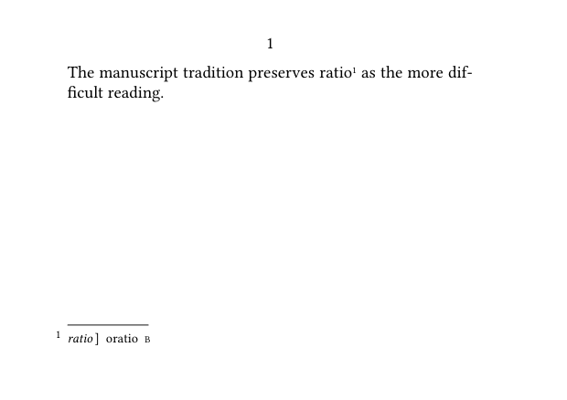
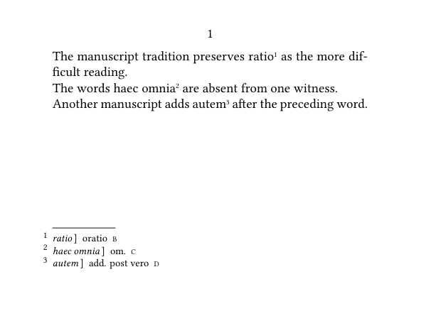
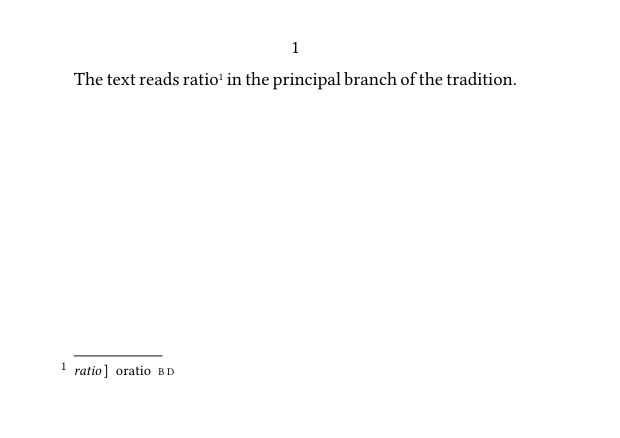
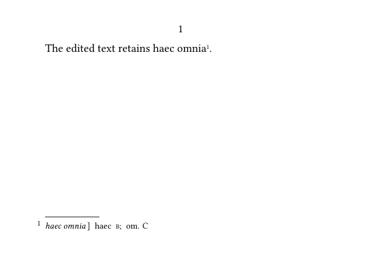
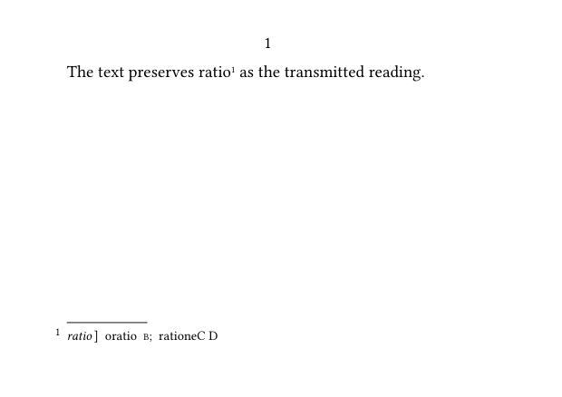
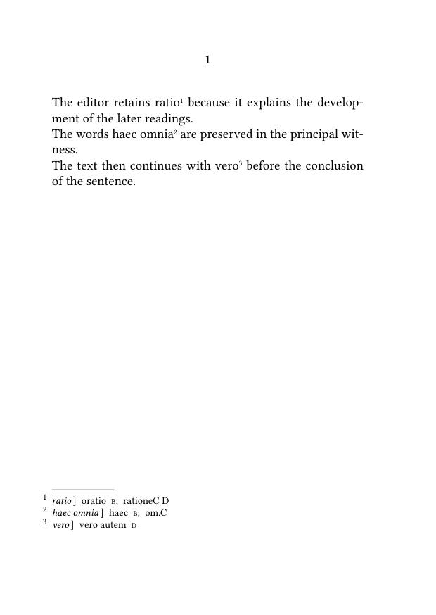
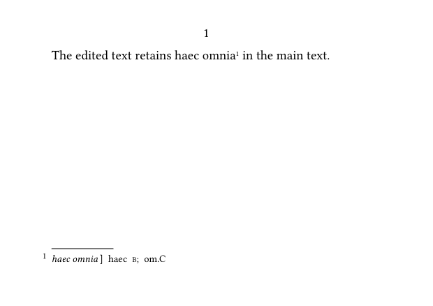
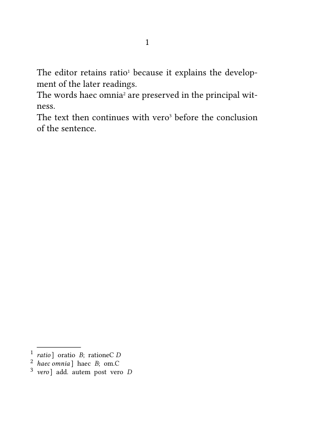
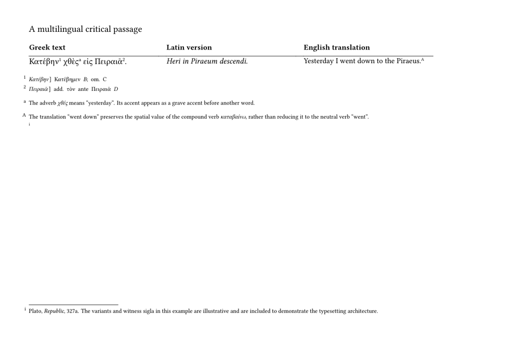
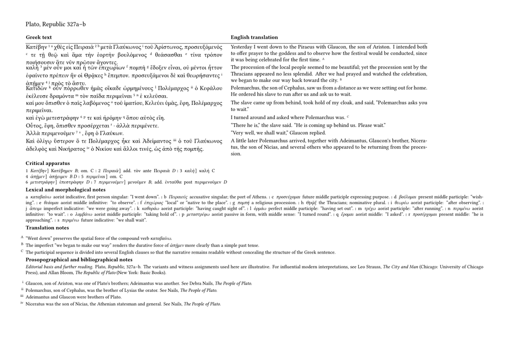

Work in progress. This guide is currently being reviewed. Please do not modify it while this notice is displayed.
← Previous: Processing TEI critical apparatus data with Lua | Guide 6 of 6 | Series overview | Glossary | Final guide in the series
The preceding guides have followed critical apparatus data from documentary encoding to editorial interpretation.
TEI XML has been used to describe witnesses, lemmas, readings, omissions, textual relationships, and other scholarly information. Lua has then transformed these encoded structures into normalized, resolved, and validated editorial records.
Those records do not yet constitute a critical apparatus.
They contain the information required to construct one, but they do not decide:
- where the apparatus should appear;
- how the lemma should be distinguished from its readings;
- how witness sigla should be ordered and separated;
- how omissions should be represented;
- how several annotation layers should be differentiated;
- how parallel texts and translations should be arranged;
- how the page should remain readable when the editorial structure becomes complex.
These are typographical questions.
ConTeXt receives editorial objects whose meaning has already been established and turns them into visible scholarly structures.
The complete workflow can therefore be summarized as follows:
TEI documents the textual evidence. Lua interprets and validates the encoded relationships. ConTeXt constructs the scholarly page.
This guide concentrates on the final stage.
It begins with a single validated apparatus record and progressively develops the mechanisms required for a complex critical edition. The examples will combine Greek and Latin source material, translations, several levels of lemmatisation, distinct apparatus and note layers, and bibliographical references. The final substantial example will present a Greek text with an English translation and several coordinated scholarly annotation layers.
The purpose is not merely to demonstrate that ConTeXt can place a large amount of information on a page.
The purpose is to show that documentary and editorial complexity can be given a clear, controlled, and typographically convincing form.
Contents
- 1 1. What this guide does
- 2 2. From validated records to typographical structures
- 3 3. Typesetting a simple apparatus entry
- 4 4. Typesetting several apparatus entries
- 5 5. Typesetting several readings in one apparatus entry
- 6 6. Generating apparatus entries from Lua
-
7
7. Typesetting several registered apparatus entries
- 7.1 7.1. Building a registry of entries
- 7.2 7.2. Reusing the same renderer
- 7.3 7.3. Complete example with several notes
- 7.4 7.4. Why identifiers should remain stable
- 7.5 7.5. Avoiding identifiers derived from lemmas
- 7.6 7.6. Keeping entry order separate from registry order
- 7.7 7.7. Registering entries incrementally
- 7.8 7.8. The registry as an intermediate editorial layer
-
8
8. Populating the registry from TEI apparatus elements
- 8.1 8.1. A simple TEI apparatus element
- 8.2 8.2. Removing the TEI witness marker
- 8.3 8.3. Reading the identifier and lemma
- 8.4 8.4. Reading all alternative readings
- 8.5 8.5. Constructing the normalised record
- 8.6 8.6. A simplified extraction function
- 8.7 8.7. A ConTeXt XML setup for apparatus elements
- 8.8 8.8. Passing the current XML node to Lua
- 8.9 8.9. Why extraction should precede typesetting
- 8.10 8.10. Keeping the TEI source and Lua record distinct
- 8.11 8.11. Extracting several apparatus elements
-
9
9. Representing editorial operations explicitly
- 9.1 9.1. Why an empty reading is not sufficient
- 9.2 9.2. Adding an operation field
- 9.3 9.3. A minimal set of operations
- 9.4 9.4. Defining ConTeXt commands for operations
- 9.5 9.5. Rendering ordinary readings and omissions
- 9.6 9.6. Complete example with an omission
- 9.7 9.7. Representing additions
- 9.8 9.8. Defining the printed form of an addition
- 9.9 9.9. Rendering an addition from Lua
- 9.10 9.10. Representing transpositions
- 9.11 9.11. Normalising empty TEI readings as omissions
- 9.12 9.12. Encoding operations explicitly in TEI
- 9.13 9.13. Validating operation-specific fields
- 9.14 9.14. Keeping abbreviations out of the data
- 9.15 9.15. The operation field as an editorial abstraction
- 9.16 9.16. Extending the renderer without changing the registry architecture
-
10
10. Validating witness references against a witness registry
- 10.1 10.1. Declaring witnesses in Lua
- 10.2 10.2. Checking one witness identifier
- 10.3 10.3. Validating the witnesses of one reading
- 10.4 10.4. Detecting an empty witness list
- 10.5 10.5. Detecting duplicate witness references
- 10.6 10.6. Integrating witness checks into reading validation
- 10.7 10.7. Validating a complete apparatus record
- 10.8 10.8. Registering only valid apparatus entries
- 10.9 10.9. Complete validation example
- 10.10 10.10. Using witness metadata during rendering
- 10.11 10.11. Passing witness sigla to ConTeXt individually
- 10.12 10.12. Formatting witnesses according to type
- 10.13 10.13. Sorting witnesses by declared order
- 10.14 10.14. Keeping source order and display order distinct
- 10.15 10.15. Witness groups
- 10.16 10.16. Validation as a boundary between scholarship and typography
-
11
11. Collecting validation results in a structured report
- 11.1 11.1. From immediate messages to stored diagnostics
- 11.2 11.2. Defining the report table
- 11.3 11.3. Defining diagnostic levels
- 11.4 11.4. Adding a general diagnostic function
- 11.5 11.5. Recording an unknown witness
- 11.6 11.6. Counting diagnostics by level
- 11.7 11.7. Printing a summary in the compilation log
- 11.8 11.8. Printing every diagnostic in the log
- 11.9 11.9. Grouping diagnostics by apparatus identifier
- 11.10 11.10. Recording the source location
- 11.11 11.11. Recording normalisation decisions
- 11.12 11.12. Distinguishing validation from correction
- 11.13 11.13. Rejecting records with errors but retaining their diagnostics
- 11.14 11.14. Avoiding duplicate rejection messages
- 11.15 11.15. Recording report statistics incrementally
- 11.16 11.16. Recording accepted and rejected entries
- 11.17 11.17. A complete minimal report implementation
- 11.18 11.18. Typesetting the report with ConTeXt
- 11.19 11.19. A compact typeset report
- 11.20 11.20. Printing only selected diagnostic levels
- 11.21 11.21. Filtering by apparatus entry
- 11.22 11.22. Sorting diagnostics before presentation
- 11.23 11.23. Separating report data from report wording
- 11.24 11.24. Producing multilingual reports
- 11.25 11.25. Machine-readable report output
- 11.26 11.26. Comparing validation runs
- 11.27 11.27. Validation reports as editorial documents
- 11.28 11.28. The complete reporting sequence
-
12
12. Assembling a complete minimal workflow
- 12.1 12.1. The TEI source
- 12.2 12.2. The witness registry
- 12.3 12.3. The normalised apparatus records
- 12.4 12.4. The report and apparatus registries
- 12.5 12.5. Adding diagnostics
- 12.6 12.6. Validating witness references
- 12.7 12.7. Validating editorial operations
- 12.8 12.8. Validating and registering an apparatus entry
- 12.9 12.9. Registering all extracted entries
- 12.10 12.10. Sorting and typesetting witness lists
- 12.11 12.11. Rendering the different operations
- 12.12 12.12. Rendering a complete apparatus entry
- 12.13 12.13. ConTeXt definitions for the apparatus
- 12.14 12.14. Complete minimal working example
- 12.15 12.15. Expected apparatus output
- 12.16 12.16. Expected validation summary
- 12.17 12.17. Introducing an invalid record for testing
- 12.18 12.18. What the complete example demonstrates
- 12.19 12.19. What remains simplified
- 12.20 12.20. A reusable division of responsibilities
- 12.21 12.21. From minimal example to project architecture
- 12.22 12.22. What this section has established
-
13
13. Adapting the workflow to projects of different sizes
- 13.1 13.1. A minimal workflow for a small edition
- 13.2 13.2. A compact validator
- 13.3 13.3. A compact renderer
- 13.4 13.4. What should not be simplified away
- 13.5 13.5. When to introduce a separate witness registry
- 13.6 13.6. When to introduce structured diagnostics
- 13.7 13.7. When to separate Lua code into modules
- 13.8 13.8. Defining a public module interface
- 13.9 13.9. Avoiding unrestricted global functions
- 13.10 13.10. Keeping ConTeXt commands semantic
- 13.11 13.11. Keeping Lua output semantic
- 13.12 13.12. Separating project policy from generic processing
- 13.13 13.13. A simple policy table
- 13.14 13.14. Scaling from one apparatus layer to several
- 13.15 13.15. Scaling from inline records to external TEI
- 13.16 13.16. Scaling the data model cautiously
- 13.17 13.17. Preserving unknown TEI information
- 13.18 13.18. Distinguishing source fields from normalised fields
- 13.19 13.19. Testing the workflow in layers
- 13.20 13.20. Testing normalisation separately
- 13.21 13.21. Testing the renderer with hand-written records
- 13.22 13.22. Testing invalid data deliberately
- 13.23 13.23. Keeping demonstration code smaller than production code
- 13.24 13.24. Choosing the appropriate level of architecture
- 13.25 13.25. A progressive migration path
- 13.26 13.26. The cost of premature complexity
- 13.27 13.27. The cost of insufficient structure
- 13.28 13.28. A practical principle for extension
- 13.29 13.29. What this section has established
-
14
14. A multilingual scholarly example
- 14.1 14.1. The three textual levels
- 14.2 14.2. An abbreviated TEI representation
- 14.3 14.3. Normalised Lua records
- 14.4 14.4. Witness declarations
- 14.5 14.5. Defining several annotation layers in ConTeXt
- 14.6 14.6. ConTeXt commands for the apparatus
- 14.7 14.7. A complete multilingual minimal working example
- 14.8 14.8. Expected critical apparatus
- 14.9 14.9. Several levels of lemmatisation
- 14.10 14.10. Why the annotation layers remain separate
- 14.11 14.11. The role of Lua in the multilingual example
- 14.12 14.12. The role of ConTeXt in the multilingual example
- 14.13 14.13. Changing the apparatus language
- 14.14 14.14. Changing the parallel layout
- 14.15 14.15. What the complex example demonstrates
-
15
15. A substantial multilingual edition page
- 15.1 15.1. What the example contains
- 15.2 15.2. The edited passage
- 15.3 15.3. Complete scholarly working example
- 15.4 15.4. Reading the resulting page
- 15.5 15.5. Abundant lemmatisation without overloading the text columns
- 15.6 15.6. Paragraph alignment rather than mechanical line alignment
- 15.7 15.7. The typographical load is deliberately substantial
- 15.8 15.8. What the example demonstrates about ConTeXt
- 16 16. What this guide has established
- 17 17. Related pages and further reading
1. What this guide does
This guide transforms the validated intermediate records constructed in Guide 5 into typographical structures.
The examples progressively show how to:
- receive prepared Lua records in ConTeXt;
- format lemmas, readings, omissions, and witness sigla;
- preserve the editorial order of apparatus entries;
- distinguish several scholarly annotation layers;
- associate apparatus entries with parallel source texts;
- add translations and bibliographical notes;
- construct a complete scholarly page from structured editorial data;
- adapt the same records to different typographical designs.
The first examples deliberately use small records. This makes it possible to observe the relationship between each editorial field and its typographical realization.
Later examples combine these mechanisms.
The progression is therefore not from an unstructured source directly to a complex page. It is from simple and explicit typographical functions to a coordinated scholarly composition.
The guide does not repeat the XML extraction and validation mechanisms developed earlier.
It assumes that the records passed to ConTeXt have already been:
- extracted from the TEI source;
- normalized;
- classified;
- connected with declared witnesses;
- checked against the rules of the edition;
- separated into accepted and rejected records.
ConTeXt can therefore concentrate on presentation without having to reinterpret the TEI document each time an apparatus entry is printed.
2. From validated records to typographical structures
A validated Lua record is an editorial representation, not a visual design.
For example:
{
id = "app-001",
valid = true,
lemma = {
text = "λόγος",
witness_ids = { "A" },
},
readings = {
{
kind = "reading",
text = "λέξις",
witness_ids = { "B", "C" },
},
},
}
This record establishes several facts:
- the apparatus entry has a stable identifier;
-
its lemma is
λόγος; -
witness
Asupports that lemma; -
the variant reading is
λέξις; -
witnesses
BandCsupport the variant; - the record has passed validation.
It does not establish how these facts should appear on the page.
The same record might be composed as:
λόγος A] λέξις B C
or:
λόγος] λέξις B C; A
or within a more explicitly structured entry:
λόγος A
λέξις B C
The editorial content is stable. Its visual realization may vary according to the conventions and purposes of the edition.
2.1. Receiving prepared Lua records
In the examples that follow, ConTeXt receives Lua tables whose fields have predictable meanings.
A reading record may contain:
{
kind = "reading",
text = "λέξις",
witness_ids = { "B", "C" },
witnesses = { ... },
valid = true,
}
ConTeXt can use these fields without returning to the XML source.
It can request:
record.lemma.text
to obtain the lemma, or:
record.readings[1].witnesses
to obtain the resolved witness records associated with the first reading.
This does not mean that ConTeXt merely prints every field mechanically.
The typesetting layer selects, orders, abbreviates, and differentiates the available information according to the design of the apparatus.
For example, a witness record may contain a full description:
{
id = "A",
siglum = "A",
kind = "manuscript",
description = "Paris, Bibliothèque nationale de France, grec 1807",
}
The apparatus will normally print only the siglum:
A
The full description may instead be used in a list of witnesses, a tooltip, a reference section, or an editorial report.
The intermediate record therefore supplies structured possibilities. ConTeXt decides which of them belong in the current typographical context.
2.2. Editorial meaning and typographical realization
A useful distinction must be maintained between editorial categories and their visual expression.
The Lua record may state:
kind = "omission"
This category identifies the meaning of the reading.
ConTeXt may render it as:
om.
or:
omitted
or:
—
or by another convention adopted for the edition.
Likewise, a witness of type:
kind = "edition"
may be displayed differently from a manuscript witness, but the Lua record does not need to prescribe the font, colour, spacing, or punctuation used for that distinction.
The typographical realization may depend on:
- the language of the apparatus;
- the conventions of the scholarly field;
- the available horizontal space;
- the number of apparatus layers;
- the intended print format;
- the requirements of screen publication;
- the design adopted by a publisher or series.
ConTeXt should therefore transform editorial categories into typography through named and reusable formatting commands.
The same data can then receive a different appearance without being reprocessed.
2.3. Keeping processing and presentation separate
The separation between Lua processing and ConTeXt presentation is not an absolute technical boundary.
ConTeXt and Lua operate within the same system, and a practical implementation may allow them to communicate closely.
The distinction is nevertheless important because the two layers answer different questions.
Lua asks:
- What does this record contain?
- Which references have been resolved?
- Which category describes this reading?
- Is the record valid?
- Which witnesses belong to it?
ConTeXt asks:
- Which part should be printed?
- In what order should the parts appear?
- Which punctuation should separate them?
- Which typographical style should identify each function?
- Where should the apparatus be placed?
- How should the entry behave at a line or page break?
When these questions are mixed inside a single macro, the resulting code becomes difficult to inspect and difficult to adapt.
A macro responsible for printing a reading should not also have to parse a TEI attribute, remove reference markers, detect unknown witnesses, and determine whether an empty string represents an omission.
Those operations belong to the processing layer developed in Guide 5.
The typesetting layer can therefore begin from a simpler contract:
accepted editorial record
v
typographical formatting functions
v
apparatus entry
This separation will become increasingly important when several apparatus layers, parallel texts, translations, and bibliographical notes are composed on the same page.
The next section begins with the smallest useful typographical unit: one validated apparatus entry.
3. Typesetting a simple apparatus entry
Once Lua has collected and validated the critical data, ConTeXt does not need to interpret the original TEI elements. It only needs the typographical components of each apparatus entry.
A simple entry may be represented by three values:
| Component | Value | Typographical role |
|---|---|---|
| lemma | ratio
|
the reading printed in the edited text |
| reading | oratio
|
the alternative reading recorded by the apparatus |
| witnesses | B
|
the witness supporting that reading |
These values correspond to a TEI structure such as:
<app> <lem>ratio</lem> <rdg wit="#B">oratio</rdg> </app>
At the typesetting stage, however, ConTeXt does not need to reconstruct this XML hierarchy. Lua can pass the three prepared values to a small ConTeXt interface:
\ApparatusEntry
{ratio}
{oratio}
{B}
The command can then assign a distinct typographical treatment to the lemma, the alternative reading, and the witness siglum.
Key point. The lemma, the reading, and the witness siglum remain distinct editorial components even when they are composed as one compact apparatus entry.
-
\mainlanguage[en] \setuppapersize[A7,landscape] \setupbodyfont [libertinus,9pt] \definenote [apparatus] \setupnotation [apparatus] [way=bypage] \define[1]\ApparatusLemma {{\it #1}} \define[1]\ApparatusReading {#1} \define[1]\ApparatusWitness {{\tfxx #1}} \define[3]\ApparatusEntry {\ApparatusLemma{#1}% \thinspace]\enspace \ApparatusReading{#2}% \enspace \ApparatusWitness{#3}} \starttext The manuscript tradition preserves ratio\apparatus{\ApparatusEntry {ratio} {oratio} {B}} as the more difficult reading. \stoptext
-

The resulting note has the conventional compact form:
ratio] oratio B
The closing bracket separates the lemma from the information that follows. The alternative reading is then followed by the siglum of the witness that supports it.
The definitions deliberately keep the three components separate:
\ApparatusLemma \ApparatusReading \ApparatusWitness
This separation is more important than the particular formatting used in the example. An editor may later change the treatment of lemmas, readings, or sigla without modifying the Lua records and without rewriting every apparatus entry.
For example, witness sigla could be made italic:
\define[1]\ApparatusWitness
{{\it #1}}
or the lemma could be printed in roman type rather than italics:
\define[1]\ApparatusLemma
{#1}
The data remain unchanged. Only their typographical interpretation changes.
What to notice. The example does not bind the editorial record to one visual convention. Changing the definitions changes the appearance of the apparatus, not the underlying data.
3.1. Passing a prepared Lua record
In the processing stage described in the previous section, Lua may have produced a normalised record resembling the following:
{
lemma = "ratio",
readings = {
{
text = "oratio",
witnesses = { "B" }
}
}
}
For this simple case, the record can be reduced to the three arguments expected
by \ApparatusEntry:
lemma -> ratio reading -> oratio witnesses -> B
The significant boundary is therefore not between XML and printed text directly, but between two different representations:
validated critical record
v
typographical arguments
v
ConTeXt apparatus entry
Lua is responsible for ensuring that the witness reference is valid and that the record contains the required fields. ConTeXt is responsible for placing the note and giving its components a consistent visual form.
This first example contains only one alternative reading supported by one witness. The next section extends the same interface to several apparatus entries and to records containing more than one reading.
4. Typesetting several apparatus entries
A critical apparatus normally contains more than one note. Once the typographical interface has been defined, the same command can be reused throughout the edited text.
The following example contains three apparatus entries:
- one alternative reading;
- one omission;
- one additional word.
-
\mainlanguage[en] \setuppapersize[A7,landscape] \setupbodyfont [libertinus,9pt] \definenote [apparatus] \setupnotation [apparatus] [way=bypage] \define[1]\ApparatusLemma {{\it #1}} \define[1]\ApparatusReading {#1} \define[1]\ApparatusWitness {{\tfxx #1}} \define[3]\ApparatusEntry {\ApparatusLemma{#1}% \thinspace]\enspace \ApparatusReading{#2}% \enspace \ApparatusWitness{#3}} \starttext The manuscript tradition preserves ratio\apparatus{\ApparatusEntry {ratio} {oratio} {B}} as the more difficult reading. The words haec omnia\apparatus{\ApparatusEntry {haec omnia} {om.} {C}} are absent from one witness. Another manuscript adds autem\apparatus{\ApparatusEntry {autem} {add. post vero} {D}} after the preceding word. \stoptext
-

The three notes are constructed by repeated calls to the same command:
\ApparatusEntry
{lemma}
{reading}
{witnesses}
The typographical structure is therefore stable even though the editorial meaning of the entries differs.
Key point. A reusable typographical interface can accommodate substitutions, omissions, and additions without requiring a different macro for every editorial case.
The first entry records a substitution:
ratio] oratio B
The second records an omission:
haec omnia] om. C
The third records an addition:
autem] add. post vero D
At this stage, abbreviations such as om., add.,
and post are passed to ConTeXt as ordinary textual values.
ConTeXt does not need to determine their editorial meaning. It only gives
them their assigned typographical form.
4.1. Keeping editorial data distinct from running text
The word or passage printed in the main text is not necessarily identical to the complete lemma displayed in the apparatus.
For example, the running text may contain:
haec omnia
while the apparatus receives the same passage as an explicit argument:
\apparatus{\ApparatusEntry
{haec omnia}
{om.}
{C}}
This repetition is acceptable in a small hand-written example, but it becomes fragile in a larger edition. A correction made in the running text may fail to be reproduced in the apparatus entry.
Structured data make it possible to avoid this problem. Lua may store the lemma, reading, and witness references once, then pass the validated values to ConTeXt when the note is typeset.
The processing sequence remains:
TEI apparatus element
v
Lua record
v
validation and normalisation
v
ConTeXt apparatus entry
The ConTeXt interface remains small because decisions about the structure and validity of the critical data have already been made before typesetting.
4.2. Several witnesses for one reading
A reading may be supported by more than one witness. For a simple typographical interface, Lua can prepare the witness list as a single string:
B D
The resulting ConTeXt call remains unchanged:
\ApparatusEntry
{ratio}
{oratio}
{B D}
For example:
-
\mainlanguage[en] \setuppapersize[A7,landscape] \setupbodyfont [libertinus,9pt] \definenote [apparatus] \define[1]\ApparatusLemma {{\it #1}} \define[1]\ApparatusReading {#1} \define[1]\ApparatusWitness {{\tfxx #1}} \define[3]\ApparatusEntry {\ApparatusLemma{#1}% \thinspace]\enspace \ApparatusReading{#2}% \enspace \ApparatusWitness{#3}} \starttext The text reads ratio\apparatus{\ApparatusEntry {ratio} {oratio} {B D}} in the principal branch of the tradition. \stoptext
-

The note is printed as:
ratio] oratio B D
At the ConTeXt level, B D is only the formatted witness field.
Lua may have constructed it from a list such as:
witnesses = { "B", "D" }
This distinction will become important when witness lists must be sorted, grouped, checked, or formatted according to their type.
The next section introduces entries containing more than one alternative reading.
5. Typesetting several readings in one apparatus entry
A single lemma may be associated with several alternative readings. In TEI,
these readings normally belong to the same <app> element:
<app> <lem>ratio</lem> <rdg wit="#B">oratio</rdg> <rdg wit="#C #D">ratione</rdg> </app>
After validation, Lua may represent the same information as one record containing several readings:
{
lemma = "ratio",
readings = {
{
text = "oratio",
witnesses = { "B" }
},
{
text = "ratione",
witnesses = { "C", "D" }
}
}
}
The important point is that this remains one apparatus entry. The lemma is printed once, followed by the readings that belong to it.
What to notice. Several readings may belong to one editorial object. The outer command controls the entry as a whole; the inner commands control the individual readings.
5.1. Separating the readings typographically
A simple interface can define one command for the complete entry and another for each individual reading:
-
\mainlanguage[en] \setuppapersize[A7,landscape] \setupbodyfont [libertinus,9pt] \definenote [apparatus] \setupnotation [apparatus] [way=bypage] \define[1]\ApparatusLemma {{\it #1}} \define[1]\ApparatusReadingText {#1} \define[1]\ApparatusWitness {{\tfxx #1}} \define[2]\ApparatusReading {\ApparatusReadingText{#1}% \enspace \ApparatusWitness{#2}} \define[1]\ApparatusReadingSeparator {;\enspace} \define[2]\ApparatusEntry {\ApparatusLemma{#1}% \thinspace]\enspace #2} \starttext The text preserves ratio\apparatus{\ApparatusEntry {ratio} {\ApparatusReading {oratio} {B}% \ApparatusReadingSeparator \ApparatusReading {ratione} {C D}}} as the transmitted reading. \stoptext
The resulting note has the form:
ratio] oratio B; ratione C D
The lemma is printed only once. Each reading is followed by its supporting witnesses, and the readings are separated by a semicolon.
The structure of the ConTeXt call reflects the logical organisation of the entry:
\ApparatusEntry
{lemma}
{
\ApparatusReading
{first reading}
{witnesses}
\ApparatusReadingSeparator
\ApparatusReading
{second reading}
{witnesses}
}
This is more flexible than placing all the information in one undivided string. The editor may later change:
- the formatting of the lemma;
- the formatting of each reading;
- the formatting of witness sigla;
- the separator between readings.
The critical data themselves do not need to be changed.
5.2. Why the second argument contains complete readings
The command \ApparatusEntry now takes two arguments rather than
three:
\ApparatusEntry
{lemma}
{formatted readings}
This change is necessary because an entry may contain any number of readings. A fixed interface such as
\ApparatusEntry
{lemma}
{reading}
{witnesses}
can represent only one reading without adding more and more arguments.
By contrast, the second argument of the new interface may contain one reading, two readings, or a longer sequence:
\ApparatusEntry
{ratio}
{\ApparatusReading
{oratio}
{B}}
or:
\ApparatusEntry
{ratio}
{\ApparatusReading
{oratio}
{B}%
\ApparatusReadingSeparator
\ApparatusReading
{ratione}
{C D}}
The outer command controls the entry as a whole. The inner commands control the individual readings.
5.3. Generating the reading sequence with Lua
Lua can traverse the list of readings and emit the corresponding ConTeXt commands.
The logical operation is:
for each reading:
print its text
print its witnesses
insert a separator unless it is the final reading
For the record:
readings = {
{
text = "oratio",
witnesses = { "B" }
},
{
text = "ratione",
witnesses = { "C", "D" }
}
}
Lua may generate:
\ApparatusReading
{oratio}
{B}
\ApparatusReadingSeparator
\ApparatusReading
{ratione}
{C D}
ConTeXt then applies the typographical definitions without needing to know how many readings were present in the original TEI element.
This preserves a clear division of responsibility:
| Stage | Responsibility |
|---|---|
| TEI | records the lemma, readings, and witness references |
| Lua | validates the record and constructs the sequence of readings |
| ConTeXt | formats and places the resulting apparatus entry |
5.4. Omissions among several readings
An omission may occur beside one or more positive readings:
<app> <lem>haec omnia</lem> <rdg wit="#B">haec</rdg> <rdg wit="#C">om.</rdg> </app>
The same ConTeXt interface can typeset this entry:
-
\mainlanguage[en] \setuppapersize[A7,landscape] \setupbodyfont [libertinus,9pt] \definenote [apparatus] \define[1]\ApparatusLemma {{\it #1}} \define[1]\ApparatusReadingText {#1} \define[1]\ApparatusWitness {{\tfxx #1}} \define[2]\ApparatusReading {\ApparatusReadingText{#1}% \enspace \ApparatusWitness{#2}} \define[1]\ApparatusReadingSeparator {;\enspace} \define[2]\ApparatusEntry {\ApparatusLemma{#1}% \thinspace]\enspace #2} \starttext The edited text retains haec omnia\apparatus{\ApparatusEntry {haec omnia} {\ApparatusReading {haec} {B}% \ApparatusReadingSeparator \ApparatusReading {om.} {C}}}. \stoptext
-

The note is printed as:
haec omnia] haec B; om. C
For ConTeXt, om. is simply the text of one reading. Lua may,
however, have produced it from a structured indication that the witness omits
the lemma.
The next section will connect this typographical interface directly to Lua, so that the apparatus entry is generated from a validated record rather than written manually.
6. Generating apparatus entries from Lua
The preceding examples wrote the ConTeXt apparatus commands manually. The next step is to generate those commands directly from a validated Lua record.
This does not mean that Lua takes over the typographical work. Lua selects, organises, and passes the data. The visual form of the apparatus remains defined by ConTeXt commands.
6.1. A validated apparatus record
Consider the following Lua record:
local entry = {
lemma = "ratio",
readings = {
{
text = "oratio",
witnesses = { "B" }
},
{
text = "ratione",
witnesses = { "C", "D" }
}
}
}
The record contains one lemma and two alternative readings. Each reading has its own list of supporting witnesses.
At this stage, the record is assumed to have already passed the structural checks introduced in the previous guide:
- the lemma is present;
- at least one reading is present;
- every reading contains a text value;
- every witness identifier is valid.
The renderer therefore does not need to repair or reinterpret the data. It can concentrate on passing the prepared values to ConTeXt.
6.2. Defining a Lua renderer
The following Lua function traverses the readings and emits the ConTeXt commands defined in the preceding section:
local function typesetapparatusentry(entry)
context.ApparatusEntry(
entry.lemma,
function()
for index, reading in ipairs(entry.readings) do
context.ApparatusReading(
reading.text,
table.concat(reading.witnesses, " ")
)
if index < #entry.readings then
context.ApparatusReadingSeparator()
end
end
end
)
end
The operation may be read in three stages:
entry.lemma
-> first argument of \ApparatusEntry
reading.text
-> first argument of \ApparatusReading
reading.witnesses
-> joined and passed as the witness field
The expression
table.concat(reading.witnesses, " ")
turns a Lua list such as
{ "C", "D" }
into the string:
C D
The separator is emitted only between readings:
if index < #entry.readings then context.ApparatusReadingSeparator() end
This prevents an unnecessary semicolon from appearing after the final reading.
6.3. Complete minimal example
The following example combines:
- the ConTeXt definitions controlling the visual form;
- a structured Lua apparatus record;
- a Lua renderer;
- a call from the edited text.
-
\mainlanguage[en] \setuppapersize[A7,landscape] \setupbodyfont [libertinus,9pt] \definenote [apparatus] \setupnotation [apparatus] [way=bypage] \define[1]\ApparatusLemma {{\it #1}} \define[1]\ApparatusReadingText {#1} \define[1]\ApparatusWitness {{\tfxx #1}} \define[2]\ApparatusReading {\ApparatusReadingText{#1}% \enspace \ApparatusWitness{#2}} \define[1]\ApparatusReadingSeparator {;\enspace} \define[2]\ApparatusEntry {\ApparatusLemma{#1}% \thinspace]\enspace #2} \startluacode local apparatusentries = { ratio = { lemma = "ratio", readings = { { text = "oratio", witnesses = { "B" } }, { text = "ratione", witnesses = { "C", "D" } } } } } local function typesetapparatusentry(entry) context.ApparatusEntry( entry.lemma, function() for index, reading in ipairs(entry.readings) do context.ApparatusReading( reading.text, table.concat(reading.witnesses, " ") ) if index < #entry.readings then context.ApparatusReadingSeparator() end end end ) end function typesetapparatus(id) local entry = apparatusentries[id] if entry then typesetapparatusentry(entry) end end \stopluacode \define[1]\TypesetApparatus {\ctxlua{typesetapparatus("#1")}} \starttext The text preserves ratio\apparatus{\TypesetApparatus{ratio}} as the transmitted reading. \stoptext
-

The resulting note is:
ratio] oratio B; ratione C D
Result. The running text requests the record by identifier, Lua traverses the prepared readings, and ConTeXt applies the typographical definitions.
The running text contains only the identifier of the prepared record:
\apparatus{\TypesetApparatus{ratio}}
The complete lemma, readings, and witness lists remain in the Lua data structure.
6.4. Looking up an entry by identifier
The example stores the record in a table indexed by the identifier
ratio:
local apparatusentries = {
ratio = {
lemma = "ratio",
readings = {
...
}
}
}
The command
\TypesetApparatus{ratio}
passes this identifier to Lua:
\define[1]\TypesetApparatus
{\ctxlua{typesetapparatus("#1")}}
Lua then retrieves the corresponding record:
local entry = apparatusentries[id]
This lookup separates the location of the apparatus note from the full critical record.
The text contains a compact reference:
ratio\apparatus{\TypesetApparatus{ratio}}
while Lua retains the structured data:
lemma readings witnesses
In a larger workflow, the identifier need not be identical to the lemma. A neutral identifier may be preferable:
app-001 app-002 app-003
For example:
local apparatusentries = {
["app-001"] = {
lemma = "ratio",
readings = {
{
text = "oratio",
witnesses = { "B" }
}
}
}
}
The corresponding call would be:
ratio\apparatus{\TypesetApparatus{app-001}}
Neutral identifiers avoid problems when:
- the same lemma occurs more than once;
- a lemma contains spaces or punctuation;
- a lemma changes during editorial revision;
- several apparatus entries refer to identical words in different places.
6.5. Handling an unknown identifier
Even validated data may be called incorrectly from the ConTeXt source. A simple diagnostic can make an unknown identifier visible during compilation:
function typesetapparatus(id)
local entry = apparatusentries[id]
if not entry then
report("unknown apparatus identifier: %s", id)
return
end
typesetapparatusentry(entry)
end
The reporter can be defined with:
local report =
logs.reporter("critical-edition", "apparatus")
The complete Lua fragment becomes:
local report =
logs.reporter("critical-edition", "apparatus")
function typesetapparatus(id)
local entry = apparatusentries[id]
if not entry then
report("unknown apparatus identifier: %s", id)
return
end
typesetapparatusentry(entry)
end
A call such as
\TypesetApparatus{app-999}
will then produce a diagnostic message in the compilation log instead of silently generating an empty note.
This check does not replace validation of the apparatus records. It checks a different boundary: the connection between a ConTeXt call and the Lua registry.
Caution. A valid apparatus record can still be requested under an incorrect identifier. Record validation and identifier lookup therefore protect two different parts of the workflow.
6.6. Keeping the renderer independent of the data source
The renderer does not need to know whether the record was:
- written directly in Lua;
- extracted from a TEI document;
- imported from another structured format;
- constructed during an earlier processing stage.
It expects only a normalised record with the following shape:
{
lemma = "...",
readings = {
{
text = "...",
witnesses = { "...", "..." }
}
}
}
This normalised representation acts as an interface between the source data and the typesetting layer.
The complete processing sequence is now:
TEI source
v
Lua extraction
v
normalised apparatus record
v
validation
v
Lua renderer
v
ConTeXt typographical commands
v
printed apparatus entry
Each layer has a limited responsibility:
| Layer | Responsibility |
|---|---|
| TEI | records the scholarly structure and witness references |
| Lua extraction | reads the relevant XML elements and attributes |
| Lua record | provides a stable internal representation |
| Lua validation | checks the completeness and consistency of the data |
| Lua renderer | traverses the record and calls the appropriate ConTeXt commands |
| ConTeXt | controls the visual form and placement of the apparatus |
The renderer therefore forms a narrow bridge between structured critical data and typographical commands. It does not collapse the distinction between the two.
The next section will extend the registry to several apparatus records and will show how the same renderer can typeset entries at different points in the edited text.
7. Typesetting several registered apparatus entries
A real edition normally contains many apparatus entries distributed throughout the text. Once the renderer has been defined, the same Lua registry can store all of them.
Each entry receives a stable identifier. ConTeXt uses that identifier to request the corresponding note, while Lua retains the complete scholarly record.
7.1. Building a registry of entries
The following registry contains three apparatus records:
local apparatusentries = {
["app-001"] = {
lemma = "ratio",
readings = {
{
text = "oratio",
witnesses = { "B" }
},
{
text = "ratione",
witnesses = { "C", "D" }
}
}
},
["app-002"] = {
lemma = "haec omnia",
readings = {
{
text = "haec",
witnesses = { "B" }
},
{
text = "om.",
witnesses = { "C" }
}
}
},
["app-003"] = {
lemma = "vero",
readings = {
{
text = "vero autem",
witnesses = { "D" }
}
}
}
}
The keys app-001, app-002, and
app-003 identify the records. They do not determine how the
entries are printed.
The first record contains two alternative readings:
ratio] oratio B; ratione C D
The second contains a positive reading and an omission:
haec omnia] haec B; om. C
The third records an addition within the transmitted reading:
vero] vero autem D
7.2. Reusing the same renderer
The renderer introduced in the preceding section does not need to be changed. It can typeset any record that follows the expected structure:
local function typesetapparatusentry(entry)
context.ApparatusEntry(
entry.lemma,
function()
for index, reading in ipairs(entry.readings) do
context.ApparatusReading(
reading.text,
table.concat(reading.witnesses, " ")
)
if index < #entry.readings then
context.ApparatusReadingSeparator()
end
end
end
)
end
The lookup function retrieves the requested record:
function typesetapparatus(id)
local entry = apparatusentries[id]
if not entry then
report("unknown apparatus identifier: %s", id)
return
end
typesetapparatusentry(entry)
end
The renderer is generic because it does not contain the text of any particular lemma or reading. It operates only on the structure of the record.
7.3. Complete example with several notes
The following example places three apparatus entries at different points in the running text.
-
\mainlanguage[en] \setuppapersize[A6] \setupbodyfont [libertinus,9pt] \definenote [apparatus] \setupnotation [apparatus] [way=bypage] \define[1]\ApparatusLemma {{\it #1}} \define[1]\ApparatusReadingText {#1} \define[1]\ApparatusWitness {{\tfxx #1}} \define[2]\ApparatusReading {\ApparatusReadingText{#1}% \enspace \ApparatusWitness{#2}} \define[1]\ApparatusReadingSeparator {;\enspace} \define[2]\ApparatusEntry {\ApparatusLemma{#1}% \thinspace]\enspace #2} \startluacode local report = logs.reporter("critical-edition", "apparatus") local apparatusentries = { ["app-001"] = { lemma = "ratio", readings = { { text = "oratio", witnesses = { "B" } }, { text = "ratione", witnesses = { "C", "D" } } } }, ["app-002"] = { lemma = "haec omnia", readings = { { text = "haec", witnesses = { "B" } }, { text = "om.", witnesses = { "C" } } } }, ["app-003"] = { lemma = "vero", readings = { { text = "vero autem", witnesses = { "D" } } } } } local function typesetapparatusentry(entry) context.ApparatusEntry( entry.lemma, function() for index, reading in ipairs(entry.readings) do context.ApparatusReading( reading.text, table.concat(reading.witnesses, " ") ) if index < #entry.readings then context.ApparatusReadingSeparator() end end end ) end function typesetapparatus(id) local entry = apparatusentries[id] if not entry then report("unknown apparatus identifier: %s", id) return end typesetapparatusentry(entry) end \stopluacode \define[1]\TypesetApparatus {\ctxlua{typesetapparatus("#1")}} \starttext The editor retains ratio\apparatus{\TypesetApparatus{app-001}} because it explains the development of the later readings. The words haec omnia\apparatus{\TypesetApparatus{app-002}} are preserved in the principal witness. The text then continues with vero\apparatus{\TypesetApparatus{app-003}} before the conclusion of the sentence. \stoptext
-

The apparatus contains three independently generated notes:
ratio] oratio B; ratione C D haec omnia] haec B; om. C vero] vero autem D
Only the identifiers appear in the ConTeXt source:
\TypesetApparatus{app-001}
\TypesetApparatus{app-002}
\TypesetApparatus{app-003}
The scholarly content remains in the Lua registry.
7.4. Why identifiers should remain stable
An apparatus identifier is an internal reference. It should remain stable even when the wording of the lemma or readings changes during editorial revision.
Suppose the first record initially contains:
lemma = "ratio"
and is later corrected to:
lemma = "recta ratio"
The identifier may remain:
app-001
The call in the text therefore does not need to be rewritten:
\TypesetApparatus{app-001}
Stable identifiers are especially useful when:
- the same word occurs several times;
- the lemma changes during revision;
- entries are sorted or filtered;
- other records refer to the same apparatus entry;
- diagnostic reports identify entries by their internal key.
The identifier belongs to the processing architecture, not to the visible apparatus.
7.5. Avoiding identifiers derived from lemmas
Using the lemma itself as the registry key may appear convenient:
apparatusentries["ratio"] = {
...
}
This approach becomes unreliable when the same lemma occurs more than once:
ratio ... ratio
Both occurrences would require the same key even though they may have different readings and witnesses.
Keys derived from lemmas may also contain:
- spaces;
- punctuation;
- accented characters;
- ConTeXt commands;
- XML entities;
- text that later changes.
Neutral identifiers avoid these difficulties:
app-001 app-002 app-003
A more descriptive convention may also be used:
book1-line12-app1 book1-line18-app1 book2-line03-app2
The exact convention is less important than its consistency and stability.
Caution. Do not derive registry keys mechanically from lemmas. The same lemma may occur more than once, and its wording may change during editorial revision.
7.6. Keeping entry order separate from registry order
Lua tables indexed by identifiers should not be treated as an ordered sequence. The order of the printed apparatus entries is determined by their position in the running text:
ratio\apparatus{\TypesetApparatus{app-001}}
haec omnia\apparatus{\TypesetApparatus{app-002}}
vero\apparatus{\TypesetApparatus{app-003}}
The registry may list the records in another order without changing the order of the notes:
local apparatusentries = {
["app-003"] = { ... },
["app-001"] = { ... },
["app-002"] = { ... }
}
The registry answers the question:
Which record belongs to this identifier?
The ConTeXt document answers the question:
Where should this apparatus note appear?
This distinction prevents storage order from being confused with textual order.
7.7. Registering entries incrementally
Instead of constructing one large Lua table at once, entries may be registered through a function:
local apparatusentries = {}
local function registerapparatus(id, entry)
apparatusentries[id] = entry
end
An entry can then be added with:
registerapparatus("app-001", {
lemma = "ratio",
readings = {
{
text = "oratio",
witnesses = { "B" }
}
}
})
This approach is useful when records are:
- extracted successively from TEI;
- loaded from several files;
- produced by different processing stages;
- validated at the moment of registration.
A minimal duplicate check may also be added:
local function registerapparatus(id, entry)
if apparatusentries[id] then
report("duplicate apparatus identifier: %s", id)
return false
end
apparatusentries[id] = entry
return true
end
The function now refuses to overwrite an existing record silently.
This check protects the identity of the entries. It does not yet validate the internal contents of each record, which remains a separate operation.
7.8. The registry as an intermediate editorial layer
The registry is more than a convenient Lua table. It forms an intermediate editorial layer between TEI extraction and ConTeXt composition.
Its records are:
- independent of the original XML syntax;
- structured enough to be validated;
- accessible by stable identifiers;
- reusable by different renderers;
- suitable for diagnostic and editorial reports.
The processing model can therefore be represented as:
TEI document
v
extracted apparatus data
v
validated Lua registry
v
identifier lookup
v
generic Lua renderer
v
ConTeXt apparatus note
The ConTeXt source does not contain the complete apparatus data, and the Lua registry does not determine the final typography. Each layer retains a specific role.
The next section will show how the registry can be populated from TEI apparatus elements rather than from records written manually in Lua.
8. Populating the registry from TEI apparatus elements
The preceding examples constructed apparatus records directly in Lua. In an
actual TEI workflow, those records will normally be extracted from
<app>, <lem>, and
<rdg> elements.
The purpose of the extraction stage is not to typeset the XML directly. It is to transform the TEI structure into the normalised Lua records expected by the registry and renderer.
8.1. A simple TEI apparatus element
Consider the following TEI fragment:
<app xml:id="app-001"> <lem>ratio</lem> <rdg wit="#B">oratio</rdg> <rdg wit="#C #D">ratione</rdg> </app>
The TEI element contains:
| TEI component | Value | Function |
|---|---|---|
xml:id
|
app-001
|
identifies the apparatus entry |
<lem>
|
ratio
|
records the lemma |
first <rdg>
|
oratio
|
records one alternative reading |
first @wit
|
#B
|
identifies the supporting witness |
second <rdg>
|
ratione
|
records another alternative reading |
second @wit
|
#C #D
|
identifies two supporting witnesses |
The corresponding normalised Lua record should have the form:
{
lemma = "ratio",
readings = {
{
text = "oratio",
witnesses = { "B" }
},
{
text = "ratione",
witnesses = { "C", "D" }
}
}
}
The extraction stage therefore performs several transformations:
xml:id="app-001"
-> registry key "app-001"
<lem>ratio</lem>
-> lemma = "ratio"
<rdg wit="#B">oratio</rdg>
-> text = "oratio"
-> witnesses = { "B" }
<rdg wit="#C #D">ratione</rdg>
-> text = "ratione"
-> witnesses = { "C", "D" }
8.2. Removing the TEI witness marker
In TEI, witness references are commonly written with a leading number sign:
wit="#B #C #D"
The Lua registry used in this guide stores the corresponding identifiers without that marker:
{ "B", "C", "D" }
A small Lua function can normalise the attribute value:
local function parsewitnesses(value)
local witnesses = {}
for reference in value:gmatch("%S+") do
witnesses[#witnesses + 1] =
reference:gsub("^#", "")
end
return witnesses
end
The expression
value:gmatch("%S+")
iterates over the space-separated references.
For the value
#C #D
the loop receives:
#C #D
The expression
reference:gsub("^#", "")
removes one leading number sign. The resulting table is:
{ "C", "D" }
This normalisation makes later processing easier. The renderer does not need to know how TEI encodes references in attributes.
8.3. Reading the identifier and lemma
A TEI apparatus entry needs a stable registry key. The natural source is its
xml:id attribute:
<app xml:id="app-001">
Conceptually, the extraction operation is:
local id = attribute value of xml:id
The lemma is obtained from the text content of the
<lem> child:
local lemma = text content of the first lem element
The resulting values are:
id = "app-001" lemma = "ratio"
The exact XML access functions depend on the extraction method used in the workflow. The important point is that the values are converted into ordinary Lua strings before registration.
8.4. Reading all alternative readings
An <app> element may contain any number of
<rdg> children.
The extraction stage must therefore build the readings table incrementally:
local readings = {}
for each rdg child do
readings[#readings + 1] = {
text = reading text,
witnesses = parsed wit attribute
}
end
For the TEI fragment:
<rdg wit="#B">oratio</rdg> <rdg wit="#C #D">ratione</rdg>
the resulting table is:
readings = {
{
text = "oratio",
witnesses = { "B" }
},
{
text = "ratione",
witnesses = { "C", "D" }
}
}
The order of the Lua readings follows the order of the
<rdg> elements in the TEI source.
This order may be editorially significant. It should therefore be preserved unless a later processing rule explicitly sorts or groups the readings.
8.5. Constructing the normalised record
Once the identifier, lemma, and readings have been extracted, the normalised record can be assembled:
local entry = {
lemma = lemma,
readings = readings
}
It can then be registered:
registerapparatus(id, entry)
The complete logical sequence is:
read xml:id read lemma read every reading parse every witness list construct normalised record validate record register record
The extraction function should not normally typeset the entry at this stage. Its task is to prepare the data for later use.
8.6. A simplified extraction function
The following pseudocode shows the complete operation without committing to a particular XML access interface:
local function extractapparatus(app)
local id =
getattribute(app, "xml:id")
local lemma =
gettext(firstchild(app, "lem"))
local readings = {}
for rdg in children(app, "rdg") do
readings[#readings + 1] = {
text =
gettext(rdg),
witnesses =
parsewitnesses(
getattribute(rdg, "wit") or ""
)
}
end
local entry = {
lemma = lemma,
readings = readings
}
if validateapparatus(id, entry) then
registerapparatus(id, entry)
end
end
The names
getattribute gettext firstchild children
are descriptive placeholders. They represent the operations required from the XML layer:
- read an attribute;
- read textual content;
- find a child element;
- iterate over child elements.
Separating these generic XML operations from the registry logic makes the architecture easier to understand and adapt.
8.7. A ConTeXt XML setup for apparatus elements
ConTeXt can associate an XML setup with every
<app> element.
A basic document setup may contain:
\startxmlsetups tei:setups
\xmlsetsetup
{#1}
{tei:app}
{tei:app}
\stopxmlsetups
\xmlregistersetup{tei:setups}
The setup assigned to each apparatus element is then defined with:
\startxmlsetups tei:app % Extract or process the current apparatus element. \stopxmlsetups
This setup provides a controlled entry point for passing the current XML node to Lua or for retrieving its attributes and children through ConTeXt's XML commands.
The setup should not immediately impose the final typography on the raw XML content. Its first responsibility is to obtain the structured values required by the Lua record.
8.8. Passing the current XML node to Lua
One possible architecture is to let the XML setup call a Lua function with a reference to the current node:
\startxmlsetups tei:app
\ctxlua{
extractapparatusfromxml(
"\luaescapestring{\xmlatt{#1}{xml:id}}",
"\luaescapestring{\xmlfirst{#1}{/lem}}"
)
}
\stopxmlsetups
This fragment is only schematic. Extracting several
<rdg> children requires iteration rather than a single
fixed call.
A more robust division of labour is:
ConTeXt XML setup
v
identifies the current app node
v
Lua XML function
v
reads lem and all rdg children
v
constructs the normalised record
In this model, ConTeXt associates the setup with the relevant TEI element, while Lua performs the variable-length traversal of the readings.
8.9. Why extraction should precede typesetting
It is technically possible to typeset each
<app> element immediately while traversing the XML
document. That approach becomes limiting when the workflow also needs to:
- validate all witness references;
- detect duplicate identifiers;
- sort or group readings;
- produce an editorial report;
- reuse the same data in another apparatus layer;
- compare the apparatus with a witness list;
- stop processing when errors are found.
A registry allows these operations to take place before the final composition.
The preferred sequence is therefore:
first pass:
extract apparatus data
normalise values
validate records
populate the registry
second pass:
typeset the edited text
request entries by identifier
render the corresponding notes
This two-stage model prevents XML traversal, validation, and typography from becoming entangled in one large setup.
Workflow. Extraction and validation should normally precede final composition. Immediate typesetting of raw TEI elements makes later checking, reuse, and reporting more difficult.
8.10. Keeping the TEI source and Lua record distinct
The TEI source and the Lua registry describe the same scholarly information, but they serve different purposes.
The TEI form is designed for interchange and explicit textual encoding:
<app xml:id="app-001"> <lem>ratio</lem> <rdg wit="#B">oratio</rdg> <rdg wit="#C #D">ratione</rdg> </app>
The Lua form is designed for validation and processing:
apparatusentries["app-001"] = {
lemma = "ratio",
readings = {
{
text = "oratio",
witnesses = { "B" }
},
{
text = "ratione",
witnesses = { "C", "D" }
}
}
}
The ConTeXt form is designed for typography:
\ApparatusEntry
{ratio}
{\ApparatusReading
{oratio}
{B}%
\ApparatusReadingSeparator
\ApparatusReading
{ratione}
{C D}}
These are not competing representations. They are successive forms adapted to different tasks:
| Representation | Principal purpose |
|---|---|
| TEI XML | scholarly encoding and interchange |
| normalised Lua record | validation, transformation, and lookup |
| ConTeXt commands | visual form and placement |
The transition from one representation to the next should remain explicit. This makes the workflow easier to test, diagnose, and extend.
8.11. Extracting several apparatus elements
A TEI document may contain many apparatus entries:
<app xml:id="app-001"> <lem>ratio</lem> <rdg wit="#B">oratio</rdg> </app> <app xml:id="app-002"> <lem>haec omnia</lem> <rdg wit="#B">haec</rdg> <rdg wit="#C"/> </app> <app xml:id="app-003"> <lem>vero</lem> <rdg wit="#D">vero autem</rdg> </app>
The extraction stage processes every <app> element and
populates the registry:
apparatusentries = {
["app-001"] = {
lemma = "ratio",
readings = {
{
text = "oratio",
witnesses = { "B" }
}
}
},
["app-002"] = {
lemma = "haec omnia",
readings = {
{
text = "haec",
witnesses = { "B" }
},
{
text = "",
witnesses = { "C" }
}
}
},
["app-003"] = {
lemma = "vero",
readings = {
{
text = "vero autem",
witnesses = { "D" }
}
}
}
}
The empty <rdg/> in app-002 requires a
specific editorial interpretation. It may represent an omission, but that
meaning should be made explicit during normalisation rather than left as an
empty string in the final renderer.
The next section will therefore examine how omissions, additions, and other editorial operations can be represented explicitly in the Lua records before they are passed to ConTeXt.
9. Representing editorial operations explicitly
An empty or altered reading may express more than the absence of textual content. It may record an omission, an addition, a transposition, a correction, or another editorial operation.
These meanings should not remain implicit in empty strings or in abbreviations inserted directly into the TEI text. They can be represented explicitly in the normalised Lua record and converted into conventional apparatus language only at the rendering stage.
9.1. Why an empty reading is not sufficient
Consider the following TEI fragment:
<app xml:id="app-002"> <lem>haec omnia</lem> <rdg wit="#B">haec</rdg> <rdg wit="#C"/> </app>
The empty <rdg/> indicates that witness
C does not transmit the lemma. If the extraction stage creates
the record
{
lemma = "haec omnia",
readings = {
{
text = "haec",
witnesses = { "B" }
},
{
text = "",
witnesses = { "C" }
}
}
}
the renderer receives an empty string but not its editorial meaning.
The resulting apparatus might contain only:
haec omnia] haec B; C
This is incomplete. The reader needs an explicit indication that witness
C omits the lemma:
haec omnia] haec B; om. C
The normalised record should therefore distinguish an omission from an ordinary reading whose text happens to be empty.
9.2. Adding an operation field
A reading record can contain an explicit operation field:
{
operation = "omission",
witnesses = { "C" }
}
The complete apparatus record becomes:
{
lemma = "haec omnia",
readings = {
{
operation = "reading",
text = "haec",
witnesses = { "B" }
},
{
operation = "omission",
witnesses = { "C" }
}
}
}
The operation value describes the editorial function of the
record. The visible abbreviation is not stored as the reading text.
Editorial principle. The record should preserve the meaning of an editorial operation. Its abbreviated or language-specific printed form belongs to the rendering layer.
The renderer may later convert:
operation = "omission"
into:
om.
This distinction separates editorial meaning from typographical convention.
9.3. A minimal set of operations
A simple apparatus may require only a small vocabulary:
| Operation | Meaning | Possible printed form |
|---|---|---|
reading
|
an alternative textual reading | the reading text |
omission
|
the witness omits the lemma | om.
|
addition
|
the witness adds text | add.
|
transposition
|
the witness places text elsewhere | transp.
|
The internal labels should remain descriptive and stable:
reading omission addition transposition
The abbreviated forms belong to the output layer:
om. add. transp.
This makes it possible to change the language or style of the printed apparatus without changing the scholarly records.
9.4. Defining ConTeXt commands for operations
ConTeXt can define the visible form of each editorial operation:
\define[1]\ApparatusOperation
{\doifelse{#1}{omission}
{om.}
{\doifelse{#1}{addition}
{add.}
{\doifelse{#1}{transposition}
{transp.}
{#1}}}}
A more modular interface defines one command for each operation:
\define\ApparatusOmission
{om.}
\define\ApparatusAddition
{add.}
\define\ApparatusTransposition
{transp.}
Lua can then call the command corresponding to the operation.
This modular form is preferable when the abbreviations need distinct typographical treatment or localisation.
9.5. Rendering ordinary readings and omissions
The renderer must distinguish records that contain text from records that describe an operation.
A simple Lua function can handle both cases:
local function typesetreading(reading)
if reading.operation == "omission" then
context.ApparatusReading(
function()
context.ApparatusOmission()
end,
table.concat(reading.witnesses, " ")
)
else
context.ApparatusReading(
reading.text,
table.concat(reading.witnesses, " ")
)
end
end
The main apparatus renderer can then call this helper:
local function typesetapparatusentry(entry)
context.ApparatusEntry(
entry.lemma,
function()
for index, reading in ipairs(entry.readings) do
typesetreading(reading)
if index < #entry.readings then
context.ApparatusReadingSeparator()
end
end
end
)
end
The renderer no longer assumes that every reading contains a
text field.
9.6. Complete example with an omission
-
\mainlanguage[en] \setuppapersize[A7,landscape] \setupbodyfont [libertinus,9pt] \definenote [apparatus] \setupnotation [apparatus] [way=bypage] \define[1]\ApparatusLemma {{\it #1}} \define[1]\ApparatusReadingText {#1} \define[1]\ApparatusWitness {{\tfxx #1}} \define[2]\ApparatusReading {\ApparatusReadingText{#1}% \enspace \ApparatusWitness{#2}} \define[1]\ApparatusReadingSeparator {;\enspace} \define[2]\ApparatusEntry {\ApparatusLemma{#1}% \thinspace]\enspace #2} \define\ApparatusOmission {om.} \startluacode local report = logs.reporter("critical-edition", "apparatus") local apparatusentries = { ["app-002"] = { lemma = "haec omnia", readings = { { operation = "reading", text = "haec", witnesses = { "B" } }, { operation = "omission", witnesses = { "C" } } } } } local function typesetreading(reading) local witnesses = table.concat(reading.witnesses, " ") if reading.operation == "omission" then context.ApparatusReading( function() context.ApparatusOmission() end, witnesses ) else context.ApparatusReading( reading.text, witnesses ) end end local function typesetapparatusentry(entry) context.ApparatusEntry( entry.lemma, function() for index, reading in ipairs(entry.readings) do typesetreading(reading) if index < #entry.readings then context.ApparatusReadingSeparator() end end end ) end function typesetapparatus(id) local entry = apparatusentries[id] if not entry then report("unknown apparatus identifier: %s", id) return end typesetapparatusentry(entry) end \stopluacode \define[1]\TypesetApparatus {\ctxlua{typesetapparatus("#1")}} \starttext The edited text retains haec omnia\apparatus{\TypesetApparatus{app-002}} in the main text. \stoptext
-

The generated apparatus entry is:
haec omnia] haec B; om. C
The abbreviation om. is supplied by ConTeXt. The Lua record
contains only the operation name omission.
9.7. Representing additions
An addition requires both an operation and the added text.
A Lua record may contain:
{
operation = "addition",
text = "autem",
position = "post",
reference = "vero",
witnesses = { "D" }
}
This record distinguishes four pieces of information:
| Field | Value | Meaning |
|---|---|---|
operation
|
addition
|
the witness adds material |
text
|
autem
|
the added text |
position
|
post
|
the addition follows another passage |
reference
|
vero
|
the passage after which it occurs |
witnesses
|
D
|
the supporting witness |
The renderer may produce:
add. autem post vero D
or, according to another editorial convention:
vero] vero autem D
Both outputs may derive from the same structured information. The choice belongs to the rendering policy.
9.8. Defining the printed form of an addition
ConTeXt can provide commands for the operation and its positional terms:
\define\ApparatusAddition
{add.}
\define\ApparatusBefore
{ante}
\define\ApparatusAfter
{post}
A command for a complete addition may be defined as:
\define[3]\ApparatusAdditionReading
{\ApparatusAddition
\enspace
#1%
\enspace
#2%
\enspace
#3}
The arguments represent:
#1 = added text #2 = positional term #3 = reference text
For example:
\ApparatusAdditionReading
{autem}
{\ApparatusAfter}
{vero}
produces:
add. autem post vero
The witness siglum can then be appended by
\ApparatusReading.
9.9. Rendering an addition from Lua
The Lua helper can be extended:
local function typesetreading(reading)
local witnesses =
table.concat(reading.witnesses, " ")
if reading.operation == "omission" then
context.ApparatusReading(
function()
context.ApparatusOmission()
end,
witnesses
)
elseif reading.operation == "addition" then
context.ApparatusReading(
function()
context.ApparatusAdditionReading(
reading.text,
function()
if reading.position == "ante" then
context.ApparatusBefore()
else
context.ApparatusAfter()
end
end,
reading.reference
)
end,
witnesses
)
else
context.ApparatusReading(
reading.text,
witnesses
)
end
end
The conditional branch converts the internal position value into the corresponding ConTeXt command.
The Lua data remain explicit:
position = "post"
while ConTeXt determines that the printed term is:
post
9.10. Representing transpositions
A transposition may be represented by:
{
operation = "transposition",
text = "haec omnia",
position = "post",
reference = "vero",
witnesses = { "D" }
}
The possible printed form is:
haec omnia transp. post vero D
A ConTeXt command can define this convention:
\define\ApparatusTransposition
{transp.}
\define[3]\ApparatusTranspositionReading
{#1%
\enspace
\ApparatusTransposition
\enspace
#2%
\enspace
#3}
The renderer may then call:
\ApparatusTranspositionReading
{haec omnia}
{\ApparatusAfter}
{vero}
The same record could later be rendered differently without changing its internal structure.
9.11. Normalising empty TEI readings as omissions
During TEI extraction, an empty <rdg> may be converted
into an explicit omission record.
The logical operation is:
if the rdg element has no textual content:
operation = "omission"
else:
operation = "reading"
text = reading text
A simplified extraction fragment is:
local text = gettext(rdg)
local reading
if text == "" then
reading = {
operation = "omission",
witnesses =
parsewitnesses(
getattribute(rdg, "wit") or ""
)
}
else
reading = {
operation = "reading",
text = text,
witnesses =
parsewitnesses(
getattribute(rdg, "wit") or ""
)
}
end
The resulting registry no longer contains ambiguous empty strings.
This transformation should be applied only when the encoding policy defines an
empty <rdg> as an omission. If the TEI source uses another
method, the extraction rules must follow that policy.
9.12. Encoding operations explicitly in TEI
TEI can also express editorial operations through attributes or specialised elements. A project may use a fragment such as:
<rdg wit="#C" type="omission"/>
or:
<rdg wit="#D" type="addition">autem</rdg>
The extraction stage can map these values directly:
type="omission"
-> operation = "omission"
type="addition"
-> operation = "addition"
A simplified mapping function is:
local operationmap = {
omission = "omission",
addition = "addition",
transposition = "transposition"
}
local function normaliseoperation(value)
return operationmap[value] or "reading"
end
The TEI vocabulary and the internal Lua vocabulary need not be identical. The mapping stage provides an explicit correspondence between them.
9.13. Validating operation-specific fields
Different operations require different fields.
An ordinary reading requires:
operation text witnesses
An omission requires:
operation witnesses
An addition may require:
operation text position reference witnesses
A validator should therefore check records according to their operation.
A simplified validation function is:
local function validatereading(id, index, reading)
if not reading.operation then
report(
"%s, reading %d: missing operation",
id,
index
)
return false
end
if reading.operation == "reading" then
if not reading.text or reading.text == "" then
report(
"%s, reading %d: missing reading text",
id,
index
)
return false
end
elseif reading.operation == "addition" then
if not reading.text or reading.text == "" then
report(
"%s, reading %d: missing added text",
id,
index
)
return false
end
if not reading.position then
report(
"%s, reading %d: missing addition position",
id,
index
)
return false
end
elseif reading.operation == "transposition" then
if not reading.text or reading.text == "" then
report(
"%s, reading %d: missing transposed text",
id,
index
)
return false
end
elseif reading.operation ~= "omission" then
report(
"%s, reading %d: unknown operation %s",
id,
index,
tostring(reading.operation)
)
return false
end
return true
end
The validator checks scholarly structure before ConTeXt receives any typographical commands.
9.14. Keeping abbreviations out of the data
It may be tempting to store:
text = "om."
or:
text = "add. autem post vero"
This approach mixes several different kinds of information:
- the editorial operation;
- the textual content;
- the position of the operation;
- the language of the apparatus;
- the chosen abbreviation;
- the punctuation and spacing convention.
A structured record keeps these values separate:
{
operation = "addition",
text = "autem",
position = "post",
reference = "vero",
witnesses = { "D" }
}
The renderer can then produce different outputs.
A Latin-style apparatus may use:
add. autem post vero D
An English explanatory apparatus may use:
adds autem after vero D
The underlying critical record remains unchanged.
9.15. The operation field as an editorial abstraction
The operation field is not merely a programming convenience. It records an editorial interpretation of the variation.
The source may contain:
<rdg wit="#C"/>
The extraction and normalisation stages interpret it as:
operation = "omission"
The rendering stage expresses that interpretation as:
om.
The complete transformation is:
empty TEI reading
v
editorial interpretation
v
operation = "omission"
v
ConTeXt rendering rule
v
om.
Making this transformation explicit helps the editor determine where each decision is made.
9.16. Extending the renderer without changing the registry architecture
Additional operations can be introduced by adding new operation values and new rendering branches:
correction substitution duplication lacuna uncertain-reading
The general record structure remains:
{
operation = "...",
text = "...",
witnesses = { "..." }
}
Operation-specific fields can be added when necessary:
position reference cause certainty source
The registry architecture therefore remains stable while the editorial model becomes richer.
The next section will show how witness identifiers can be checked against a declared witness registry before the apparatus records are accepted for typesetting.
10. Validating witness references against a witness registry
Apparatus records should not be accepted merely because their internal structure is complete. Every witness identifier used in a reading should also refer to a witness declared by the edition.
This check connects two related but distinct data sets:
witness registry
v
declared witnesses and their metadata
apparatus registry
v
readings and their witness references
A witness reference such as B is valid only if the witness
registry contains a corresponding declaration.
10.1. Declaring witnesses in Lua
A minimal witness registry may contain one record for each witness:
local witnesses = {
A = {
siglum = "A",
type = "manuscript",
description = "the principal manuscript"
},
B = {
siglum = "B",
type = "manuscript",
description = "a second manuscript"
},
C = {
siglum = "C",
type = "printed-edition",
description = "an early printed edition"
},
D = {
siglum = "D",
type = "manuscript",
description = "a later manuscript"
}
}
The keys A, B, C, and
D are the identifiers used by the apparatus records.
The visible siglum is stored separately:
siglum = "A"
In a simple edition, the identifier and the siglum may be identical. Keeping them conceptually distinct remains useful because a project may later use an internal identifier such as:
vat-gr-1209
while printing a shorter siglum such as:
V
10.2. Checking one witness identifier
A minimal validation function can test whether an identifier occurs in the registry:
local function witnessisdeclared(id) return witnesses[id] ~= nil end
The function returns true for:
witnessisdeclared("B")
and false for:
witnessisdeclared("X")
This simple lookup is sufficient because the registry is indexed by witness identifier.
10.3. Validating the witnesses of one reading
Each reading may contain several witness references:
witnesses = { "C", "D" }
The validator should inspect every identifier:
local function validatewitnesses(
apparatusid,
readingindex,
witnesslist
)
local valid = true
for _, witnessid in ipairs(witnesslist) do
if not witnessisdeclared(witnessid) then
report(
"%s, reading %d: unknown witness %s",
apparatusid,
readingindex,
witnessid
)
valid = false
end
end
return valid
end
For the record:
{
text = "ratione",
witnesses = { "C", "X" }
}
the validator reports:
app-001, reading 2: unknown witness X
The valid witness C does not hide the invalid reference
X.
10.4. Detecting an empty witness list
A reading without supporting witnesses may be incomplete:
{
operation = "reading",
text = "oratio",
witnesses = {}
}
Whether such a record is allowed depends on the editorial policy. In a simple positive apparatus, it is usually preferable to require at least one witness.
The validation function can therefore begin with:
if not witnesslist or #witnesslist == 0 then
report(
"%s, reading %d: no witnesses declared",
apparatusid,
readingindex
)
return false
end
The complete function becomes:
local function validatewitnesses(
apparatusid,
readingindex,
witnesslist
)
if not witnesslist or #witnesslist == 0 then
report(
"%s, reading %d: no witnesses declared",
apparatusid,
readingindex
)
return false
end
local valid = true
for _, witnessid in ipairs(witnesslist) do
if not witnessisdeclared(witnessid) then
report(
"%s, reading %d: unknown witness %s",
apparatusid,
readingindex,
witnessid
)
valid = false
end
end
return valid
end
A more advanced workflow may permit readings without witnesses when they represent editorial conjectures. Such cases should be represented explicitly rather than treated as accidental omissions.
10.5. Detecting duplicate witness references
A malformed witness list may repeat the same identifier:
witnesses = { "B", "B", "D" }
The printed apparatus would then contain:
B B D
A validator can detect duplicates before typesetting:
local function validatewitnesses(
apparatusid,
readingindex,
witnesslist
)
if not witnesslist or #witnesslist == 0 then
report(
"%s, reading %d: no witnesses declared",
apparatusid,
readingindex
)
return false
end
local valid = true
local seen = {}
for _, witnessid in ipairs(witnesslist) do
if seen[witnessid] then
report(
"%s, reading %d: duplicate witness %s",
apparatusid,
readingindex,
witnessid
)
valid = false
else
seen[witnessid] = true
end
if not witnessisdeclared(witnessid) then
report(
"%s, reading %d: unknown witness %s",
apparatusid,
readingindex,
witnessid
)
valid = false
end
end
return valid
end
The seen table records the identifiers already encountered in
the current reading.
10.6. Integrating witness checks into reading validation
The operation-specific validator introduced in the preceding section can call the witness validator before checking the other fields:
local function validatereading(id, index, reading)
local valid = true
if not validatewitnesses(
id,
index,
reading.witnesses
) then
valid = false
end
if not reading.operation then
report(
"%s, reading %d: missing operation",
id,
index
)
return false
end
if reading.operation == "reading" then
if not reading.text or reading.text == "" then
report(
"%s, reading %d: missing reading text",
id,
index
)
valid = false
end
elseif reading.operation == "omission" then
-- No reading text is required.
elseif reading.operation == "addition" then
if not reading.text or reading.text == "" then
report(
"%s, reading %d: missing added text",
id,
index
)
valid = false
end
if not reading.position then
report(
"%s, reading %d: missing addition position",
id,
index
)
valid = false
end
elseif reading.operation == "transposition" then
if not reading.text or reading.text == "" then
report(
"%s, reading %d: missing transposed text",
id,
index
)
valid = false
end
else
report(
"%s, reading %d: unknown operation %s",
id,
index,
tostring(reading.operation)
)
valid = false
end
return valid
end
This function performs two different kinds of checks:
| Check | Question |
|---|---|
| witness validation | do the referenced witnesses exist? |
| operation validation | does the reading contain the fields required by its operation? |
Both checks are required before the reading can be trusted.
10.7. Validating a complete apparatus record
A complete apparatus validator should inspect:
- the apparatus identifier;
- the lemma;
- the readings table;
- every reading;
- every witness reference.
A minimal function may be written as follows:
local function validateapparatus(id, entry)
local valid = true
if not id or id == "" then
report("apparatus entry without identifier")
valid = false
end
if not entry.lemma or entry.lemma == "" then
report(
"%s: missing lemma",
tostring(id)
)
valid = false
end
if not entry.readings or #entry.readings == 0 then
report(
"%s: no readings declared",
tostring(id)
)
valid = false
else
for index, reading in ipairs(entry.readings) do
if not validatereading(id, index, reading) then
valid = false
end
end
end
return valid
end
This function does not stop after the first error. It continues through the record so that the compilation log can contain a fuller diagnostic report.
10.8. Registering only valid apparatus entries
The registration function can reject invalid records:
local function registerapparatus(id, entry)
if apparatusentries[id] then
report(
"duplicate apparatus identifier: %s",
id
)
return false
end
if not validateapparatus(id, entry) then
report(
"apparatus entry rejected: %s",
id
)
return false
end
apparatusentries[id] = entry
return true
end
The sequence is now:
construct record
v
validate apparatus structure
v
validate witness references
v
check duplicate identifier
v
register record
Only records that pass all checks enter the apparatus registry.
10.9. Complete validation example
The following example contains one valid entry and one invalid entry:
local witnesses = {
A = {
siglum = "A",
type = "manuscript"
},
B = {
siglum = "B",
type = "manuscript"
},
C = {
siglum = "C",
type = "printed-edition"
}
}
local apparatusentries = {}
registerapparatus("app-001", {
lemma = "ratio",
readings = {
{
operation = "reading",
text = "oratio",
witnesses = { "B" }
},
{
operation = "reading",
text = "ratione",
witnesses = { "C" }
}
}
})
registerapparatus("app-002", {
lemma = "haec omnia",
readings = {
{
operation = "omission",
witnesses = { "X" }
}
}
})
The first entry is accepted because witnesses B and
C are declared.
The second entry is rejected because witness X does not occur
in the witness registry.
The log may contain:
critical-edition > apparatus > app-002, reading 1: unknown witness X critical-edition > apparatus > apparatus entry rejected: app-002
A later call to:
\TypesetApparatus{app-002}
will also report an unknown apparatus identifier because the invalid record was never registered.
10.10. Using witness metadata during rendering
Once witness references have been validated, the renderer may retrieve the visible siglum from the witness registry rather than printing the internal identifier directly.
A helper function can return the siglum:
local function witnesssiglum(id)
local witness = witnesses[id]
if witness then
return witness.siglum
end
return id
end
A list of identifiers can then be converted into a list of sigla:
local function typesetwitnesslist(witnesslist)
local sigla = {}
for _, id in ipairs(witnesslist) do
sigla[#sigla + 1] =
witnesssiglum(id)
end
return table.concat(sigla, " ")
end
The reading renderer now uses:
local witnesses = typesetwitnesslist(reading.witnesses)
instead of:
local witnesses = table.concat(reading.witnesses, " ")
This distinction becomes visible when internal identifiers differ from printed sigla.
For example:
local witnesses = {
["vat-gr-1209"] = {
siglum = "V"
},
["par-gr-1807"] = {
siglum = "P"
}
}
An apparatus record may contain:
witnesses = {
"vat-gr-1209",
"par-gr-1807"
}
while the printed apparatus contains:
V P
10.11. Passing witness sigla to ConTeXt individually
Joining all sigla into one Lua string is sufficient for a simple apparatus:
V P
A more flexible renderer can pass each witness to ConTeXt separately:
\define[1]\ApparatusWitness
{{\tfxx #1}}
\define\ApparatusWitnessSeparator
{\space}
Lua can then emit:
local function typesetwitnesslist(witnesslist)
for index, id in ipairs(witnesslist) do
local witness = witnesses[id]
context.ApparatusWitness(
witness.siglum
)
if index < #witnesslist then
context.ApparatusWitnessSeparator()
end
end
end
This approach allows ConTeXt to control:
- the font used for every siglum;
- the spacing between sigla;
- punctuation between witness groups;
- links or references associated with sigla;
- distinct formatting for different witness types.
The apparatus reading command must then accept content generated by a function rather than one preconstructed string.
10.12. Formatting witnesses according to type
The witness registry may distinguish manuscripts from printed editions:
local witnesses = {
A = {
siglum = "A",
type = "manuscript"
},
C = {
siglum = "C",
type = "printed-edition"
}
}
ConTeXt can define separate commands:
\define[1]\ApparatusManuscript
{{\it #1}}
\define[1]\ApparatusPrintedEdition
{{\sc #1}}
Lua may select the appropriate command:
local function typesetwitness(id)
local witness = witnesses[id]
if witness.type == "manuscript" then
context.ApparatusManuscript(
witness.siglum
)
elseif witness.type == "printed-edition" then
context.ApparatusPrintedEdition(
witness.siglum
)
else
context.ApparatusWitness(
witness.siglum
)
end
end
The apparatus record still contains only witness identifiers. The registry supplies the metadata required for typographical differentiation.
10.13. Sorting witnesses by declared order
The order in which witnesses appear in a TEI @wit attribute may
not be the preferred order for the printed apparatus.
A witness registry may assign an explicit order:
local witnesses = {
A = {
siglum = "A",
order = 1
},
B = {
siglum = "B",
order = 2
},
C = {
siglum = "C",
order = 3
},
D = {
siglum = "D",
order = 4
}
}
A copied list can then be sorted:
local function sortedwitnesses(witnesslist)
local result = {}
for index, id in ipairs(witnesslist) do
result[index] = id
end
table.sort(
result,
function(first, second)
return
witnesses[first].order
<
witnesses[second].order
end
)
return result
end
The function copies the original list before sorting it. This preserves the order extracted from the TEI source while allowing the renderer to use a different display order.
For:
witnesses = { "D", "B", "C" }
the sorted result is:
{ "B", "C", "D" }
The printed apparatus therefore follows the editorially declared witness order.
10.14. Keeping source order and display order distinct
The order of references in TEI and the order of sigla in print are not necessarily the same kind of information.
The TEI source may preserve:
wit="#D #B #C"
The normalised record may retain:
witnesses = { "D", "B", "C" }
The renderer may display:
B C D
according to the order declared in the witness registry.
These stages should remain distinguishable:
source order
v
normalised witness list
v
editorial sorting rule
v
display order
This distinction allows the project to preserve source information without being bound to it typographically.
10.15. Witness groups
A witness registry may also assign witnesses to groups:
local witnesses = {
A = {
siglum = "A",
group = "alpha"
},
B = {
siglum = "B",
group = "alpha"
},
C = {
siglum = "C",
group = "beta"
},
D = {
siglum = "D",
group = "beta"
}
}
The apparatus renderer may use this information to:
- group related witnesses;
- insert different separators between groups;
- abbreviate a complete group;
- apply distinct formatting to group sigla;
- generate witness statistics.
The apparatus record itself does not need to repeat the group information:
witnesses = { "A", "B", "C", "D" }
The witness registry remains the authoritative source for witness metadata.
10.16. Validation as a boundary between scholarship and typography
Witness validation does more than prevent a misspelled siglum from appearing in print. It establishes that every typographical reference corresponds to a declared scholarly object.
The complete relation is:
TEI witness declaration
v
normalised witness registry
v
validated apparatus reference
v
printed siglum
Without this connection, a string such as B is merely a
character. After validation, it is a reference to a defined witness with its
own metadata, identity, and place in the edition.
This is one of the principal benefits of introducing Lua between TEI and ConTeXt: the typesetting layer receives not merely strings, but values whose editorial relationships have already been checked.
Key point. Validation turns a printed siglum from an isolated character into a reference to a declared scholarly object with a stable identity and metadata.
The next section will show how validation results can be collected into a structured report rather than written only as isolated messages in the compilation log.
11. Collecting validation results in a structured report
Writing validation messages directly to the compilation log is useful during development, but a large edition may produce many related warnings and errors.
A structured report makes it possible to:
- collect all diagnostics before printing them;
- distinguish errors from warnings;
- group messages by apparatus entry;
- count the different kinds of problem;
- print a concise summary in the log;
- generate a separate editorial report.
The validation layer therefore becomes not only a gatekeeper, but also a source of information about the state of the edition.
11.1. From immediate messages to stored diagnostics
The preceding validation functions used calls such as:
report( "%s, reading %d: unknown witness %s", apparatusid, readingindex, witnessid )
This writes the message immediately to the compilation log.
A structured system first stores the diagnostic:
{
level = "error",
category = "unknown-witness",
apparatus = "app-002",
reading = 1,
witness = "X",
message = "unknown witness X"
}
The report can then decide later how this information should be presented.
11.2. Defining the report table
A minimal report table may contain a list of diagnostics:
local validationreport = {
diagnostics = {}
}
A helper function can add a diagnostic:
local function adddiagnostic(data)
validationreport.diagnostics[
#validationreport.diagnostics + 1
] = data
end
For example:
adddiagnostic {
level = "error",
category = "unknown-witness",
apparatus = "app-002",
reading = 1,
witness = "X",
message = "unknown witness X"
}
The diagnostic remains available after the validation function has returned.
11.3. Defining diagnostic levels
A simple report may distinguish three levels:
| Level | Meaning | Possible consequence |
|---|---|---|
error
|
the record cannot be trusted or typeset safely | reject the record |
warning
|
the record is usable but deserves editorial attention | accept and report |
information
|
the record is valid but a processing decision should be recorded | accept and document |
Examples include:
error:
unknown witness
missing lemma
duplicate apparatus identifier
warning:
witness list not in declared order
empty description
unusual operation
information:
witness list reordered
omission normalised from an empty rdg element
The distinction between levels should reflect the editorial policy of the project.
11.4. Adding a general diagnostic function
A general function can construct and store diagnostics:
local function diagnostic(
level,
category,
data
)
data.level = level
data.category = category
validationreport.diagnostics[
#validationreport.diagnostics + 1
] = data
end
It may be called as follows:
diagnostic(
"error",
"unknown-witness",
{
apparatus = "app-002",
reading = 1,
witness = "X",
message = "unknown witness X"
}
)
This keeps the common fields separate from the details specific to each diagnostic.
11.5. Recording an unknown witness
The witness validator can now store a structured diagnostic rather than writing only a formatted string:
local function validatewitnesses(
apparatusid,
readingindex,
witnesslist
)
if not witnesslist or #witnesslist == 0 then
diagnostic(
"error",
"missing-witnesses",
{
apparatus = apparatusid,
reading = readingindex,
message = "no witnesses declared"
}
)
return false
end
local valid = true
local seen = {}
for _, witnessid in ipairs(witnesslist) do
if seen[witnessid] then
diagnostic(
"error",
"duplicate-witness",
{
apparatus = apparatusid,
reading = readingindex,
witness = witnessid,
message =
"duplicate witness " .. witnessid
}
)
valid = false
else
seen[witnessid] = true
end
if not witnessisdeclared(witnessid) then
diagnostic(
"error",
"unknown-witness",
{
apparatus = apparatusid,
reading = readingindex,
witness = witnessid,
message =
"unknown witness " .. witnessid
}
)
valid = false
end
end
return valid
end
The validation result remains a Boolean value, but the details are preserved in the report.
11.6. Counting diagnostics by level
The report can calculate totals:
local function countdiagnostics()
local counts = {
error = 0,
warning = 0,
information = 0
}
for _, item in ipairs(
validationreport.diagnostics
) do
local level = item.level
counts[level] =
(counts[level] or 0) + 1
end
return counts
end
For a report containing:
2 errors 1 warning 3 information messages
the resulting table is:
{
error = 2,
warning = 1,
information = 3
}
These totals can be used in both the compilation log and a typeset report.
11.7. Printing a summary in the compilation log
The log reporter introduced earlier can print a compact summary:
local report =
logs.reporter(
"critical-edition",
"validation"
)
A summary function may be written as follows:
local function reportsummary()
local counts = countdiagnostics()
report(
"%d errors, %d warnings, %d information messages",
counts.error or 0,
counts.warning or 0,
counts.information or 0
)
end
The compilation log may then contain:
critical-edition > validation > 2 errors, 1 warnings, 3 information messages
The wording can be refined to handle singular and plural forms, but the essential information is already available.
11.8. Printing every diagnostic in the log
A function can traverse the stored diagnostics:
local function reportdiagnostics()
for _, item in ipairs(
validationreport.diagnostics
) do
report(
"%s | %s | %s",
item.level,
item.apparatus or "-",
item.message or item.category
)
end
end
The resulting log may contain:
error | app-002 | unknown witness X error | app-003 | missing lemma warning | app-004 | witness list reordered
Because the report stores structured fields, the printed format can be changed without modifying the validation functions.
11.9. Grouping diagnostics by apparatus identifier
A large report is easier to read when diagnostics are grouped by apparatus entry.
A grouping function may construct a new table:
local function diagnosticsbyapparatus()
local groups = {}
for _, item in ipairs(
validationreport.diagnostics
) do
local id =
item.apparatus or "general"
groups[id] = groups[id] or {}
groups[id][#groups[id] + 1] = item
end
return groups
end
The result may resemble:
{
["app-002"] = {
{
level = "error",
category = "unknown-witness",
witness = "X"
}
},
["app-003"] = {
{
level = "error",
category = "missing-lemma"
},
{
level = "warning",
category = "unusual-operation"
}
}
}
This organisation is useful when the editor wishes to correct one apparatus entry at a time.
11.10. Recording the source location
An identifier may not be enough to locate an error in a long TEI file.
The diagnostic can also store source information:
{
apparatus = "app-002",
source = "book1.xml",
line = 184,
message = "unknown witness X"
}
The exact location data available depend on the XML processing method.
Useful fields may include:
source line column xpath section chapter page
A diagnostic with an XPath-like location may resemble:
{
source =
"book1.xml",
xpath =
"/TEI/text/body/div[2]/p[4]/app[3]",
apparatus =
"app-002"
}
Source locations belong to the diagnostic layer rather than to the printed apparatus entry.
11.11. Recording normalisation decisions
Not every diagnostic describes an error.
Suppose an empty TEI reading is converted into an omission:
<rdg wit="#C"/>
The normalisation stage may record:
diagnostic(
"information",
"normalised-omission",
{
apparatus = "app-002",
reading = 2,
message =
"empty reading normalised as omission"
}
)
The apparatus entry remains valid, but the editorial transformation is documented.
Likewise, if a witness list is reordered:
{ "D", "B", "C" }
v
{ "B", "C", "D" }
the report may store:
diagnostic(
"information",
"witnesses-reordered",
{
apparatus = "app-001",
reading = 2,
original = { "D", "B", "C" },
result = { "B", "C", "D" },
message =
"witness list reordered"
}
)
The report therefore records processing decisions as well as failures.
11.12. Distinguishing validation from correction
A validator should normally identify problems without silently changing the data.
For example, this function detects a duplicate:
witnesses = { "B", "B", "D" }
It should not automatically reduce the list to:
{ "B", "D" }
unless the editorial policy explicitly permits that correction.
The distinction is:
validation:
detect and report the duplicate
normalisation:
apply an authorised transformation
correction:
alter data that may require editorial approval
A structured report helps preserve this distinction because every transformation can be described and assigned a level.
11.13. Rejecting records with errors but retaining their diagnostics
An invalid record should not enter the apparatus registry, but its diagnostics must remain available.
The registration function may be written as follows:
local function registerapparatus(id, entry)
if apparatusentries[id] then
diagnostic(
"error",
"duplicate-apparatus-id",
{
apparatus = id,
message =
"duplicate apparatus identifier"
}
)
return false
end
if not validateapparatus(id, entry) then
diagnostic(
"error",
"apparatus-rejected",
{
apparatus = id,
message =
"apparatus entry rejected"
}
)
return false
end
apparatusentries[id] = entry
return true
end
The report therefore contains both the specific errors and the final registration decision.
11.14. Avoiding duplicate rejection messages
A report should avoid producing unnecessary repetitions.
Suppose an entry has:
unknown witness X missing reading text
Adding a third error:
apparatus entry rejected
may be useful as a summary, but it should not obscure the original causes.
One possible policy is:
| Diagnostic | Level |
|---|---|
| unknown witness | error |
| missing reading text | error |
| apparatus entry rejected | information |
Another policy is to omit the rejection diagnostic entirely and infer it from the errors.
The choice depends on whether the report is intended primarily for programmers or for editors.
11.15. Recording report statistics incrementally
Instead of recalculating totals later, the report may update its counters when a diagnostic is added:
local validationreport = {
diagnostics = {},
counts = {
error = 0,
warning = 0,
information = 0
}
}
The diagnostic function becomes:
local function diagnostic(
level,
category,
data
)
data.level = level
data.category = category
local diagnostics =
validationreport.diagnostics
diagnostics[#diagnostics + 1] = data
local counts =
validationreport.counts
counts[level] =
(counts[level] or 0) + 1
end
The totals are now always available:
validationreport.counts.error validationreport.counts.warning validationreport.counts.information
This approach is efficient and keeps the report self-contained.
11.16. Recording accepted and rejected entries
The report can also count records rather than only diagnostics:
local validationreport = {
diagnostics = {},
counts = {
error = 0,
warning = 0,
information = 0
},
entries = {
accepted = 0,
rejected = 0
}
}
The registration function updates these values:
if not validateapparatus(id, entry) then
validationreport.entries.rejected =
validationreport.entries.rejected + 1
return false
end
apparatusentries[id] = entry
validationreport.entries.accepted =
validationreport.entries.accepted + 1
return true
The final summary may then report:
24 apparatus entries accepted 3 apparatus entries rejected 5 errors 2 warnings 7 information messages
This gives the editor a more useful overview of the processing run.
11.17. A complete minimal report implementation
The following Lua fragment combines storage, counters, and log output:
local report =
logs.reporter(
"critical-edition",
"validation"
)
local validationreport = {
diagnostics = {},
counts = {
error = 0,
warning = 0,
information = 0
},
entries = {
accepted = 0,
rejected = 0
}
}
local function diagnostic(
level,
category,
data
)
data.level = level
data.category = category
local diagnostics =
validationreport.diagnostics
diagnostics[#diagnostics + 1] = data
local counts =
validationreport.counts
counts[level] =
(counts[level] or 0) + 1
end
local function reportdiagnostics()
for _, item in ipairs(
validationreport.diagnostics
) do
report(
"%s | %s | %s",
item.level,
item.apparatus or "general",
item.message or item.category
)
end
end
local function reportsummary()
local counts =
validationreport.counts
local entries =
validationreport.entries
report(
"%d entries accepted, %d entries rejected",
entries.accepted,
entries.rejected
)
report(
"%d errors, %d warnings, %d information messages",
counts.error,
counts.warning,
counts.information
)
end
The functions may be called after all TEI apparatus elements have been processed:
reportdiagnostics() reportsummary()
11.18. Typesetting the report with ConTeXt
The same structured data can be passed to ConTeXt.
A minimal ConTeXt interface may define:
\define[3]\ValidationReportEntry
{\par
\noindent
{\bf #1}\enspace
{\tt #2}\enspace
#3}
The three arguments represent:
#1 = diagnostic level #2 = apparatus identifier #3 = message
Lua can traverse the diagnostics:
local function typesetvalidationreport()
for _, item in ipairs(
validationreport.diagnostics
) do
context.ValidationReportEntry(
item.level,
item.apparatus or "general",
item.message or item.category
)
end
end
The ConTeXt document can call:
\ctxlua{typesetvalidationreport()}
This creates a report inside the compiled document.
11.19. A compact typeset report
A fuller ConTeXt interface may be defined as follows:
\define[3]\ValidationReportEntry
{\startitem
{\bf #1}
\quad
{\tt #2}
\quad
#3
\stopitem}
\define\startValidationReport
{\subject{Validation report}
\startitemize[packed]}
\define\stopValidationReport
{\stopitemize}
Lua may then emit:
local function typesetvalidationreport()
context.startValidationReport()
for _, item in ipairs(
validationreport.diagnostics
) do
context.ValidationReportEntry(
item.level,
item.apparatus or "general",
item.message or item.category
)
end
context.stopValidationReport()
end
The report may appear as:
Validation report error app-002 unknown witness X error app-003 missing lemma warning app-004 witness list reordered
The typographical form remains controlled by ConTeXt.
11.20. Printing only selected diagnostic levels
An editor may wish to print only errors and warnings, while leaving information messages in the log.
A filtering function can test the level:
local function shouldprint(item)
return
item.level == "error"
or
item.level == "warning"
end
The report renderer becomes:
local function typesetvalidationreport()
context.startValidationReport()
for _, item in ipairs(
validationreport.diagnostics
) do
if shouldprint(item) then
context.ValidationReportEntry(
item.level,
item.apparatus or "general",
item.message or item.category
)
end
end
context.stopValidationReport()
end
Filtering does not delete the other diagnostics. It changes only the selected presentation.
11.21. Filtering by apparatus entry
The editor may also request diagnostics for one entry:
local function typesetdiagnosticsfor(id)
context.startValidationReport()
for _, item in ipairs(
validationreport.diagnostics
) do
if item.apparatus == id then
context.ValidationReportEntry(
item.level,
id,
item.message or item.category
)
end
end
context.stopValidationReport()
end
The corresponding ConTeXt command may be:
\define[1]\ValidationReportFor
{\ctxlua{
typesetdiagnosticsfor(
"\luaescapestring{#1}"
)
}}
It can be called with:
\ValidationReportFor{app-002}
This is useful during the revision of a particular passage.
11.22. Sorting diagnostics before presentation
Diagnostics may be stored in the order in which they are detected. A report may prefer another order:
errors warnings information messages
A level order can be declared:
local levelorder = {
error = 1,
warning = 2,
information = 3
}
A copy of the diagnostic list can then be sorted:
local function sorteddiagnostics()
local result = {}
for index, item in ipairs(
validationreport.diagnostics
) do
result[index] = item
end
table.sort(
result,
function(first, second)
local firstlevel =
levelorder[first.level] or 99
local secondlevel =
levelorder[second.level] or 99
if firstlevel ~= secondlevel then
return firstlevel < secondlevel
end
return
(first.apparatus or "")
<
(second.apparatus or "")
end
)
return result
end
The original detection order remains preserved in
validationreport.diagnostics.
11.23. Separating report data from report wording
The stored diagnostic should contain structured facts:
{
category = "unknown-witness",
apparatus = "app-002",
reading = 1,
witness = "X"
}
The human-readable message can be constructed later:
unknown witness X in reading 1
This separation permits:
- different report languages;
- short and long messages;
- machine-readable exports;
- category-based filtering;
- consistent terminology.
A message formatter may be written as:
local function diagnosticmessage(item)
if item.category == "unknown-witness" then
return string.format(
"unknown witness %s in reading %d",
item.witness,
item.reading
)
elseif item.category == "missing-lemma" then
return "missing lemma"
elseif item.category ==
"duplicate-apparatus-id" then
return "duplicate apparatus identifier"
end
return item.message or item.category
end
The diagnostic record remains independent of its verbal formulation.
11.24. Producing multilingual reports
Because the category is stored separately, the same diagnostic can be expressed in different languages.
For example:
local messages = {
en = {
["missing-lemma"] =
"missing lemma",
["duplicate-apparatus-id"] =
"duplicate apparatus identifier"
},
fr = {
["missing-lemma"] =
"lemme manquant",
["duplicate-apparatus-id"] =
"identifiant d'apparat dupliqué"
}
}
A formatter can select the language:
local function diagnosticmessage(
item,
language
)
local languagemessages =
messages[language] or messages.en
return
languagemessages[item.category]
or
item.message
or
item.category
end
The scholarly data and diagnostic categories remain unchanged.
11.25. Machine-readable report output
A structured report can also be exported for external processing.
Possible formats include:
Lua table JSON CSV XML plain text
A CSV-like output might contain:
level,category,apparatus,reading,witness error,unknown-witness,app-002,1,X error,missing-lemma,app-003,, warning,witnesses-reordered,app-004,2,
Such an export may be useful for:
- collaborative editorial review;
- automated tests;
- comparison between processing runs;
- spreadsheet-based correction workflows;
- integration with continuous validation tools.
The export mechanism is separate from the ConTeXt renderer.
11.26. Comparing validation runs
A structured report makes it possible to compare two versions of the edition.
For example:
first run:
12 errors
7 warnings
second run:
3 errors
4 warnings
The comparison can show whether editorial revision has reduced the number of problems.
Stable diagnostic categories and apparatus identifiers are important for this purpose:
app-002 | unknown-witness app-003 | missing-lemma
Free-form log messages are much harder to compare reliably.
11.27. Validation reports as editorial documents
A validation report is not merely a technical debugging aid.
It may document:
- unresolved witness references;
- normalisation decisions;
- rejected apparatus entries;
- additions requiring confirmation;
- unusual transpositions;
- incomplete witness descriptions;
- deviations from the declared editorial policy.
The report therefore belongs to the scholarly workflow as well as to the software architecture.
It can provide an auditable record of the transition from encoded data to printed edition.
Scope. A validation report documents detected problems, normalisation choices, and acceptance decisions. It supports editorial review, but it does not replace scholarly judgement.
11.28. The complete reporting sequence
The processing architecture can now be represented as:
TEI apparatus elements
v
extraction
v
normalisation
v
validation
+-- accepted records
| v
| apparatus registry
| v
| ConTeXt typesetting
|
`-- diagnostics
v
validation report
+-- compilation log
+-- typeset editorial report
`-- machine-readable export
The printed apparatus and the validation report derive from the same processing run, but they serve different purposes.
The apparatus presents the accepted critical data to the reader. The report documents how those data were checked, transformed, accepted, or rejected.
The next section will assemble the principal components of the guide into one complete workflow, from a small TEI source to a typeset critical apparatus and a validation summary.
12. Assembling a complete minimal workflow
The preceding sections introduced the individual parts of the processing architecture:
- TEI apparatus elements;
- extraction into Lua records;
- explicit editorial operations;
- witness declarations;
- validation;
- registration;
- Lua rendering;
- ConTeXt typesetting;
- structured diagnostics.
This section combines those parts into one small but complete example.
The purpose is not to provide a production-ready edition framework. It is to show how the different layers cooperate without collapsing their responsibilities into one large block of code.
12.1. The TEI source
The example uses a short Latin sentence containing three apparatus entries:
<TEI>
<text>
<body>
<p>
The editor retains
<app xml:id="app-001">
<lem>ratio</lem>
<rdg wit="#B">oratio</rdg>
<rdg wit="#C #D">ratione</rdg>
</app>
because it explains the later readings.
The words
<app xml:id="app-002">
<lem>haec omnia</lem>
<rdg wit="#B">haec</rdg>
<rdg wit="#C" type="omission"/>
</app>
are preserved in the principal witness.
The text then continues with
<app xml:id="app-003">
<lem>vero</lem>
<rdg wit="#D"
type="addition"
place="after"
corresp="#ref-vero">autem</rdg>
</app>
before the conclusion.
</p>
</body>
</text>
</TEI>
The three entries represent:
| Identifier | Lemma | Variation |
|---|---|---|
app-001
|
ratio
|
two alternative readings |
app-002
|
haec omnia
|
one shortened reading and one omission |
app-003
|
vero
|
an addition after the lemma |
The TEI source records scholarly structure. It does not prescribe the final form of the apparatus note.
12.2. The witness registry
The apparatus refers to four witnesses:
local witnesses = {
A = {
siglum = "A",
type = "manuscript",
description = "the principal manuscript",
order = 1
},
B = {
siglum = "B",
type = "manuscript",
description = "a second manuscript",
order = 2
},
C = {
siglum = "C",
type = "printed-edition",
description = "an early printed edition",
order = 3
},
D = {
siglum = "D",
type = "manuscript",
description = "a later manuscript",
order = 4
}
}
The registry provides:
- the internal witness identifier;
- the printed siglum;
- the witness type;
- a human-readable description;
- an explicit display order.
The apparatus records refer only to the internal identifiers.
12.3. The normalised apparatus records
After extraction and normalisation, the TEI apparatus elements may be represented as follows:
local extractedentries = {
["app-001"] = {
lemma = "ratio",
readings = {
{
operation = "reading",
text = "oratio",
witnesses = { "B" }
},
{
operation = "reading",
text = "ratione",
witnesses = { "C", "D" }
}
}
},
["app-002"] = {
lemma = "haec omnia",
readings = {
{
operation = "reading",
text = "haec",
witnesses = { "B" }
},
{
operation = "omission",
witnesses = { "C" }
}
}
},
["app-003"] = {
lemma = "vero",
readings = {
{
operation = "addition",
text = "autem",
position = "post",
reference = "vero",
witnesses = { "D" }
}
}
}
}
The TEI-specific attribute values have been converted into a stable internal vocabulary:
type="omission"
-> operation = "omission"
type="addition"
-> operation = "addition"
place="after"
-> position = "post"
The renderer no longer needs to inspect XML attributes.
12.4. The report and apparatus registries
The workflow uses two main registries:
local apparatusentries = {}
local validationreport = {
diagnostics = {},
counts = {
error = 0,
warning = 0,
information = 0
},
entries = {
accepted = 0,
rejected = 0
}
}
The first registry contains accepted apparatus records.
The second records the results of extraction, normalisation, and validation.
12.5. Adding diagnostics
A general function stores diagnostics and updates the counters:
local function diagnostic(
level,
category,
data
)
data.level = level
data.category = category
local diagnostics =
validationreport.diagnostics
diagnostics[#diagnostics + 1] = data
local counts =
validationreport.counts
counts[level] =
(counts[level] or 0) + 1
end
A diagnostic may be added with:
diagnostic(
"error",
"unknown-witness",
{
apparatus = "app-004",
reading = 1,
witness = "X",
message = "unknown witness X"
}
)
12.6. Validating witness references
The witness validation functions are:
local function witnessisdeclared(id)
return witnesses[id] ~= nil
end
local function validatewitnesses(
apparatusid,
readingindex,
witnesslist
)
if not witnesslist or #witnesslist == 0 then
diagnostic(
"error",
"missing-witnesses",
{
apparatus = apparatusid,
reading = readingindex,
message = "no witnesses declared"
}
)
return false
end
local valid = true
local seen = {}
for _, witnessid in ipairs(witnesslist) do
if seen[witnessid] then
diagnostic(
"error",
"duplicate-witness",
{
apparatus = apparatusid,
reading = readingindex,
witness = witnessid,
message =
"duplicate witness " .. witnessid
}
)
valid = false
else
seen[witnessid] = true
end
if not witnessisdeclared(witnessid) then
diagnostic(
"error",
"unknown-witness",
{
apparatus = apparatusid,
reading = readingindex,
witness = witnessid,
message =
"unknown witness " .. witnessid
}
)
valid = false
end
end
return valid
end
These checks establish that every printed siglum corresponds to a declared witness.
12.7. Validating editorial operations
The reading validator checks the fields required by each operation:
local function validatereading(
id,
index,
reading
)
local valid = true
if not validatewitnesses(
id,
index,
reading.witnesses
) then
valid = false
end
if not reading.operation then
diagnostic(
"error",
"missing-operation",
{
apparatus = id,
reading = index,
message = "missing operation"
}
)
return false
end
if reading.operation == "reading" then
if not reading.text or reading.text == "" then
diagnostic(
"error",
"missing-reading-text",
{
apparatus = id,
reading = index,
message = "missing reading text"
}
)
valid = false
end
elseif reading.operation == "omission" then
-- No reading text is required.
elseif reading.operation == "addition" then
if not reading.text or reading.text == "" then
diagnostic(
"error",
"missing-added-text",
{
apparatus = id,
reading = index,
message = "missing added text"
}
)
valid = false
end
if not reading.position then
diagnostic(
"error",
"missing-addition-position",
{
apparatus = id,
reading = index,
message = "missing addition position"
}
)
valid = false
end
if not reading.reference
or reading.reference == "" then
diagnostic(
"warning",
"missing-addition-reference",
{
apparatus = id,
reading = index,
message =
"addition has no reference text"
}
)
end
elseif reading.operation ==
"transposition" then
if not reading.text or reading.text == "" then
diagnostic(
"error",
"missing-transposed-text",
{
apparatus = id,
reading = index,
message =
"missing transposed text"
}
)
valid = false
end
else
diagnostic(
"error",
"unknown-operation",
{
apparatus = id,
reading = index,
operation = reading.operation,
message =
"unknown operation "
..
tostring(reading.operation)
}
)
valid = false
end
return valid
end
The function distinguishes fatal structural errors from conditions that merely require editorial attention.
12.8. Validating and registering an apparatus entry
The apparatus validator checks the entry as a whole:
local function validateapparatus(id, entry)
local valid = true
if not id or id == "" then
diagnostic(
"error",
"missing-apparatus-id",
{
message =
"apparatus entry without identifier"
}
)
valid = false
end
if not entry.lemma or entry.lemma == "" then
diagnostic(
"error",
"missing-lemma",
{
apparatus = id,
message = "missing lemma"
}
)
valid = false
end
if not entry.readings
or #entry.readings == 0 then
diagnostic(
"error",
"missing-readings",
{
apparatus = id,
message = "no readings declared"
}
)
valid = false
else
for index, reading in ipairs(
entry.readings
) do
if not validatereading(
id,
index,
reading
) then
valid = false
end
end
end
return valid
end
Registration occurs only after validation:
local function registerapparatus(id, entry)
if apparatusentries[id] then
diagnostic(
"error",
"duplicate-apparatus-id",
{
apparatus = id,
message =
"duplicate apparatus identifier"
}
)
validationreport.entries.rejected =
validationreport.entries.rejected + 1
return false
end
if not validateapparatus(id, entry) then
validationreport.entries.rejected =
validationreport.entries.rejected + 1
return false
end
apparatusentries[id] = entry
validationreport.entries.accepted =
validationreport.entries.accepted + 1
return true
end
12.9. Registering all extracted entries
The extracted records can now be processed:
for id, entry in pairs(extractedentries) do registerapparatus(id, entry) end
In this example, all three entries are valid:
accepted = 3 rejected = 0
The resulting apparatus registry contains:
app-001 app-002 app-003
12.10. Sorting and typesetting witness lists
The renderer may sort witness identifiers according to the order declared in the witness registry:
local function sortedwitnesses(witnesslist)
local result = {}
for index, id in ipairs(witnesslist) do
result[index] = id
end
table.sort(
result,
function(first, second)
return
witnesses[first].order
<
witnesses[second].order
end
)
return result
end
The individual witnesses are then passed to ConTeXt:
local function typesetwitnesslist(
witnesslist
)
local sorted =
sortedwitnesses(witnesslist)
for index, id in ipairs(sorted) do
local witness = witnesses[id]
if witness.type == "manuscript" then
context.ApparatusManuscript(
witness.siglum
)
elseif witness.type ==
"printed-edition" then
context.ApparatusPrintedEdition(
witness.siglum
)
else
context.ApparatusWitness(
witness.siglum
)
end
if index < #sorted then
context.ApparatusWitnessSeparator()
end
end
end
The renderer therefore uses witness metadata rather than printing raw identifiers.
12.11. Rendering the different operations
The reading renderer distinguishes ordinary readings, omissions, and additions:
local function typesetreading(reading)
if reading.operation == "omission" then
context.ApparatusReading(
function()
context.ApparatusOmission()
end,
function()
typesetwitnesslist(
reading.witnesses
)
end
)
elseif reading.operation == "addition" then
context.ApparatusReading(
function()
context.ApparatusAdditionReading(
reading.text,
function()
if reading.position == "ante" then
context.ApparatusBefore()
else
context.ApparatusAfter()
end
end,
reading.reference or ""
)
end,
function()
typesetwitnesslist(
reading.witnesses
)
end
)
else
context.ApparatusReading(
reading.text,
function()
typesetwitnesslist(
reading.witnesses
)
end
)
end
end
The internal value:
operation = "omission"
becomes the ConTeXt command:
\ApparatusOmission
The internal value:
operation = "addition"
becomes:
\ApparatusAdditionReading
The mapping between meaning and typography remains explicit.
12.12. Rendering a complete apparatus entry
The entry renderer prints the lemma once and traverses the readings:
local function typesetapparatusentry(entry)
context.ApparatusEntry(
entry.lemma,
function()
for index, reading in ipairs(
entry.readings
) do
typesetreading(reading)
if index < #entry.readings then
context.ApparatusReadingSeparator()
end
end
end
)
end
The public lookup function is:
local report =
logs.reporter(
"critical-edition",
"apparatus"
)
function typesetapparatus(id)
local entry = apparatusentries[id]
if not entry then
report(
"unknown apparatus identifier: %s",
id
)
return
end
typesetapparatusentry(entry)
end
12.13. ConTeXt definitions for the apparatus
The visual form remains in the ConTeXt layer:
\definenote
[apparatus]
\setupnotation
[apparatus]
[way=bypage]
\define[1]\ApparatusLemma
{{\it #1}}
\define[1]\ApparatusReadingText
{#1}
\define[1]\ApparatusWitness
{{\tfxx #1}}
\define[1]\ApparatusManuscript
{{\it #1}}
\define[1]\ApparatusPrintedEdition
{{\sc #1}}
\define\ApparatusWitnessSeparator
{\space}
\define[2]\ApparatusReading
{\ApparatusReadingText{#1}%
\enspace
#2}
\define[1]\ApparatusReadingSeparator
{;\enspace}
\define[2]\ApparatusEntry
{\ApparatusLemma{#1}%
\thinspace]\enspace
#2}
\define\ApparatusOmission
{om.}
\define\ApparatusAddition
{add.}
\define\ApparatusBefore
{ante}
\define\ApparatusAfter
{post}
\define[3]\ApparatusAdditionReading
{\ApparatusAddition
\enspace
#1%
\enspace
#2%
\enspace
#3}
These definitions determine:
- the font of the lemma;
- the treatment of witness types;
- spacing between sigla;
- the separator between readings;
- the abbreviations used for operations.
12.14. Complete minimal working example
The following example assembles the registries, validators, renderer, and ConTeXt interface.
-
\mainlanguage[en] \setuppapersize[A6] \setupbodyfont [libertinus,9pt] \definenote [apparatus] \setupnotation [apparatus] [way=bypage] \define[1]\ApparatusLemma {{\it #1}} \define[1]\ApparatusReadingText {#1} \define[1]\ApparatusWitness {{\tfxx #1}} \define[1]\ApparatusManuscript {{\it #1}} \define[1]\ApparatusPrintedEdition {{\sc #1}} \define\ApparatusWitnessSeparator {\space} \define[2]\ApparatusReading {\ApparatusReadingText{#1}% \enspace #2} \define[1]\ApparatusReadingSeparator {;\enspace} \define[2]\ApparatusEntry {\ApparatusLemma{#1}% \thinspace]\enspace #2} \define\ApparatusOmission {om.} \define\ApparatusAddition {add.} \define\ApparatusBefore {ante} \define\ApparatusAfter {post} \define[3]\ApparatusAdditionReading {\ApparatusAddition \enspace #1% \enspace #2% \enspace #3} \startluacode local apparatusreport = logs.reporter( "critical-edition", "apparatus" ) local validationlog = logs.reporter( "critical-edition", "validation" ) local witnesses = { A = { siglum = "A", type = "manuscript", order = 1 }, B = { siglum = "B", type = "manuscript", order = 2 }, C = { siglum = "C", type = "printed-edition", order = 3 }, D = { siglum = "D", type = "manuscript", order = 4 } } local extractedentries = { ["app-001"] = { lemma = "ratio", readings = { { operation = "reading", text = "oratio", witnesses = { "B" } }, { operation = "reading", text = "ratione", witnesses = { "C", "D" } } } }, ["app-002"] = { lemma = "haec omnia", readings = { { operation = "reading", text = "haec", witnesses = { "B" } }, { operation = "omission", witnesses = { "C" } } } }, ["app-003"] = { lemma = "vero", readings = { { operation = "addition", text = "autem", position = "post", reference = "vero", witnesses = { "D" } } } } } local apparatusentries = {} local validationreport = { diagnostics = {}, counts = { error = 0, warning = 0, information = 0 }, entries = { accepted = 0, rejected = 0 } } local function diagnostic( level, category, data ) data.level = level data.category = category local diagnostics = validationreport.diagnostics diagnostics[#diagnostics + 1] = data local counts = validationreport.counts counts[level] = (counts[level] or 0) + 1 end local function witnessisdeclared(id) return witnesses[id] ~= nil end local function validatewitnesses( apparatusid, readingindex, witnesslist ) if not witnesslist or #witnesslist == 0 then diagnostic( "error", "missing-witnesses", { apparatus = apparatusid, reading = readingindex, message = "no witnesses declared" } ) return false end local valid = true local seen = {} for _, witnessid in ipairs(witnesslist) do if seen[witnessid] then diagnostic( "error", "duplicate-witness", { apparatus = apparatusid, reading = readingindex, witness = witnessid, message = "duplicate witness " .. witnessid } ) valid = false else seen[witnessid] = true end if not witnessisdeclared(witnessid) then diagnostic( "error", "unknown-witness", { apparatus = apparatusid, reading = readingindex, witness = witnessid, message = "unknown witness " .. witnessid } ) valid = false end end return valid end local function validatereading( id, index, reading ) local valid = true if not validatewitnesses( id, index, reading.witnesses ) then valid = false end if not reading.operation then diagnostic( "error", "missing-operation", { apparatus = id, reading = index, message = "missing operation" } ) return false end if reading.operation == "reading" then if not reading.text or reading.text == "" then diagnostic( "error", "missing-reading-text", { apparatus = id, reading = index, message = "missing reading text" } ) valid = false end elseif reading.operation == "omission" then -- No reading text is required. elseif reading.operation == "addition" then if not reading.text or reading.text == "" then diagnostic( "error", "missing-added-text", { apparatus = id, reading = index, message = "missing added text" } ) valid = false end if not reading.position then diagnostic( "error", "missing-addition-position", { apparatus = id, reading = index, message = "missing addition position" } ) valid = false end else diagnostic( "error", "unknown-operation", { apparatus = id, reading = index, message = "unknown operation " .. tostring(reading.operation) } ) valid = false end return valid end local function validateapparatus(id, entry) local valid = true if not entry.lemma or entry.lemma == "" then diagnostic( "error", "missing-lemma", { apparatus = id, message = "missing lemma" } ) valid = false end if not entry.readings or #entry.readings == 0 then diagnostic( "error", "missing-readings", { apparatus = id, message = "no readings declared" } ) valid = false else for index, reading in ipairs( entry.readings ) do if not validatereading( id, index, reading ) then valid = false end end end return valid end local function registerapparatus(id, entry) if apparatusentries[id] then diagnostic( "error", "duplicate-apparatus-id", { apparatus = id, message = "duplicate apparatus identifier" } ) validationreport.entries.rejected = validationreport.entries.rejected + 1 return false end if not validateapparatus(id, entry) then validationreport.entries.rejected = validationreport.entries.rejected + 1 return false end apparatusentries[id] = entry validationreport.entries.accepted = validationreport.entries.accepted + 1 return true end for id, entry in pairs(extractedentries) do registerapparatus(id, entry) end local function sortedwitnesses(witnesslist) local result = {} for index, id in ipairs(witnesslist) do result[index] = id end table.sort( result, function(first, second) return witnesses[first].order < witnesses[second].order end ) return result end local function typesetwitnesslist( witnesslist ) local sorted = sortedwitnesses(witnesslist) for index, id in ipairs(sorted) do local witness = witnesses[id] if witness.type == "manuscript" then context.ApparatusManuscript( witness.siglum ) elseif witness.type == "printed-edition" then context.ApparatusPrintedEdition( witness.siglum ) else context.ApparatusWitness( witness.siglum ) end if index < #sorted then context.ApparatusWitnessSeparator() end end end local function typesetreading(reading) if reading.operation == "omission" then context.ApparatusReading( function() context.ApparatusOmission() end, function() typesetwitnesslist( reading.witnesses ) end ) elseif reading.operation == "addition" then context.ApparatusReading( function() context.ApparatusAdditionReading( reading.text, function() if reading.position == "ante" then context.ApparatusBefore() else context.ApparatusAfter() end end, reading.reference or "" ) end, function() typesetwitnesslist( reading.witnesses ) end ) else context.ApparatusReading( reading.text, function() typesetwitnesslist( reading.witnesses ) end ) end end local function typesetapparatusentry(entry) context.ApparatusEntry( entry.lemma, function() for index, reading in ipairs( entry.readings ) do typesetreading(reading) if index < #entry.readings then context.ApparatusReadingSeparator() end end end ) end function typesetapparatus(id) local entry = apparatusentries[id] if not entry then apparatusreport( "unknown apparatus identifier: %s", id ) return end typesetapparatusentry(entry) end function reportvalidationsummary() local counts = validationreport.counts local entries = validationreport.entries validationlog( "%d entries accepted, %d entries rejected", entries.accepted, entries.rejected ) validationlog( "%d errors, %d warnings, %d information messages", counts.error, counts.warning, counts.information ) end \stopluacode \define[1]\TypesetApparatus {\ctxlua{ typesetapparatus( "\luaescapestring{#1}" ) }} \starttext The editor retains ratio\apparatus{\TypesetApparatus{app-001}} because it explains the development of the later readings. The words haec omnia\apparatus{\TypesetApparatus{app-002}} are preserved in the principal witness. The text then continues with vero\apparatus{\TypesetApparatus{app-003}} before the conclusion of the sentence. \ctxlua{reportvalidationsummary()} \stoptext
-

12.15. Expected apparatus output
The three generated notes have the following logical form:
ratio] oratio B; ratione C D haec omnia] haec B; om. C vero] add. autem post vero D
The precise appearance depends on the ConTeXt definitions.
In the example:
- manuscript sigla are italic;
- the printed-edition siglum is set in small capitals;
- readings are separated by semicolons;
- omissions and additions use conventional Latin abbreviations.
12.16. Expected validation summary
Because all three records are valid, the compilation log contains a summary similar to:
critical-edition > validation > 3 entries accepted, 0 entries rejected critical-edition > validation > 0 errors, 0 warnings, 0 information messages
The absence of diagnostics does not mean that validation was skipped. It means that the records passed the declared checks.
12.17. Introducing an invalid record for testing
A validation system should be tested with deliberately invalid data.
For example:
["app-004"] = {
lemma = "quidem",
readings = {
{
operation = "reading",
text = "equidem",
witnesses = { "X" }
}
}
}
Witness X is not declared.
The validator records:
error | app-004 | unknown witness X
The entry is rejected, and the summary becomes:
3 entries accepted 1 entry rejected 1 error
A call to:
\TypesetApparatus{app-004}
also produces:
unknown apparatus identifier: app-004
because the invalid record never entered the apparatus registry.
12.18. What the complete example demonstrates
The complete example establishes several architectural principles.
What to notice. The example is complete because it connects all stages of the workflow, not because it places every possible TEI feature in one file.
First, the TEI source remains the scholarly encoding:
<app> <lem> <rdg> @wit @type
Second, Lua transforms the XML data into normalised records:
lemma operation text position reference witnesses
Third, validation checks the relationships among those values:
declared witnesses required fields known operations unique identifiers non-empty readings
Fourth, only accepted records enter the apparatus registry.
Fifth, the Lua renderer converts records into semantic ConTeXt commands.
Finally, ConTeXt controls the visible form and placement of the apparatus.
The complete sequence is:
TEI encoding
v
extraction
v
normalisation
v
validation
+-- diagnostics
| v
| validation report
|
`-- accepted records
v
apparatus registry
v
Lua renderer
v
ConTeXt commands
v
typeset apparatus
12.19. What remains simplified
The example deliberately omits several problems that arise in full scholarly editions:
-
mixed textual content inside
<lem>and<rdg>; - nested TEI elements;
- references to passages outside the current sentence;
- witness groups and inherited witness lists;
- conjectures without manuscript support;
- uncertain or partially legible readings;
- multiple apparatus layers;
- language-dependent apparatus terminology;
- references to sources, editors, or bibliographical records;
- page and line references;
- apparatus entries extending across several pages;
- automatic extraction from a complete external TEI file.
These extensions do not invalidate the architecture. They add fields, validation rules, and rendering policies to the same sequence of layers.
12.20. A reusable division of responsibilities
The workflow can be summarised in the following table:
| Layer | Receives | Produces | Principal responsibility |
|---|---|---|---|
| TEI | scholarly observations | encoded textual variation | explicit and interoperable representation |
| extraction | TEI nodes and attributes | preliminary Lua values | reading the encoded structure |
| normalisation | source-specific values | stable Lua records | converting encodings into a consistent internal model |
| validation | normalised records and registries | accepted records and diagnostics | checking scholarly and structural consistency |
| apparatus registry | accepted records | records retrievable by identifier | stable storage and lookup |
| Lua renderer | one apparatus record | semantic ConTeXt calls | traversing the structured data |
| ConTeXt | semantic typesetting commands | printed apparatus notes | typography, spacing, and placement |
| validation report | structured diagnostics | log, document, or export | documenting processing decisions and problems |
No layer needs to perform every task.
The architecture remains manageable because each representation is adapted to a particular kind of work.
12.21. From minimal example to project architecture
As you probably know, if you use ConTeXt at an advanced level, whether semi-professionally or professionally, substantial publishing projects — especially full-length books — are best organised as ConTeXt projects.
Such a project uses a hierarchy of directories and files that reflects the role of each file, with every file assigned a distinct function, as shown in the diagram below.
project/
+-- edition.tex
+-- environments/
| +-- apparatus.mkxl
| `-- typography.mkxl
+-- lua/
| +-- witnesses.lua
| +-- apparatus-model.lua
| +-- apparatus-validation.lua
| +-- apparatus-renderer.lua
| `-- validation-report.lua
`-- tei/
`-- text.xml
The files may have the following responsibilities:
| File | Responsibility |
|---|---|
edition.tex
|
loads the project and typesets the edition |
apparatus.mkxl
|
defines the ConTeXt apparatus interface |
witnesses.lua
|
declares witness metadata |
apparatus-model.lua
|
defines the normalised record structure |
apparatus-validation.lua
|
validates records and references |
apparatus-renderer.lua
|
converts records into ConTeXt calls |
validation-report.lua
|
stores and presents diagnostics |
text.xml
|
contains the TEI-encoded source |
This separation is not required for a small example, but it becomes useful when the edition grows.
12.22. What this section has established
This section has assembled a complete path from structured critical data to a printed apparatus entry.
The example has shown how to:
- declare witnesses and their metadata;
- store extracted apparatus records;
- represent omissions and additions explicitly;
- validate witness references;
- reject invalid entries;
- retain diagnostics in a structured report;
- retrieve accepted records by stable identifier;
- render different editorial operations;
- let ConTeXt control the final typography;
- produce a validation summary after processing.
The important result is not the size of the Lua code. It is the clarity of the boundaries between the successive representations.
A TEI apparatus element is not printed directly.
It is interpreted, normalised, checked, registered, and only then rendered.
The next section will examine how the same architecture can be simplified for small projects and expanded for larger editions without changing its essential logic.
13. Adapting the workflow to projects of different sizes
The complete workflow assembled in the preceding section separates extraction, normalisation, validation, registration, rendering, and reporting.
That architecture is useful because it can be reduced for a small project or extended for a large edition without changing its underlying logic.
A project does not need to introduce every possible layer at once. It should introduce only the distinctions required by its data, while preserving clear boundaries between scholarly information and typographical presentation.
13.1. A minimal workflow for a small edition
A small edition may contain:
- a limited number of witnesses;
- a few dozen apparatus entries;
- only ordinary readings and omissions;
- no external TEI file;
- no separate validation report.
In that case, the workflow can remain compact:
Lua witness registry
v
Lua apparatus registry
v
minimal validation
v
Lua renderer
v
ConTeXt apparatus notes
The apparatus records may be written directly in Lua:
local witnesses = {
A = {
siglum = "A"
},
B = {
siglum = "B"
},
C = {
siglum = "C"
}
}
local apparatusentries = {
["app-001"] = {
lemma = "ratio",
readings = {
{
operation = "reading",
text = "oratio",
witnesses = { "B" }
}
}
},
["app-002"] = {
lemma = "haec omnia",
readings = {
{
operation = "omission",
witnesses = { "C" }
}
}
}
}
A small validator may check only:
- that the lemma is present;
- that at least one reading exists;
- that every witness is declared.
This is sufficient when the data model remains intentionally narrow.
13.2. A compact validator
The following function performs only the essential checks:
local function validateapparatus(id, entry)
if not entry.lemma or entry.lemma == "" then
report("%s: missing lemma", id)
return false
end
if not entry.readings
or #entry.readings == 0 then
report("%s: no readings declared", id)
return false
end
for index, reading in ipairs(
entry.readings
) do
if not reading.witnesses
or #reading.witnesses == 0 then
report(
"%s, reading %d: no witnesses declared",
id,
index
)
return false
end
for _, witnessid in ipairs(
reading.witnesses
) do
if not witnesses[witnessid] then
report(
"%s, reading %d: unknown witness %s",
id,
index,
witnessid
)
return false
end
end
end
return true
end
This validator stops at the first error. It does not collect a complete report.
That limitation may be acceptable when:
- the registry is small;
- errors are corrected immediately;
- the edition is maintained by one person;
- no audit trail is required.
13.3. A compact renderer
When the project distinguishes only ordinary readings and omissions, the renderer can also remain small:
local function typesetreading(reading)
local witnesses =
table.concat(reading.witnesses, " ")
if reading.operation == "omission" then
context.ApparatusReading(
function()
context.ApparatusOmission()
end,
witnesses
)
else
context.ApparatusReading(
reading.text,
witnesses
)
end
end
The entry renderer remains unchanged:
local function typesetapparatusentry(entry)
context.ApparatusEntry(
entry.lemma,
function()
for index, reading in ipairs(
entry.readings
) do
typesetreading(reading)
if index < #entry.readings then
context.ApparatusReadingSeparator()
end
end
end
)
end
The architecture is simplified by reducing the number of supported operations, not by mixing the data and typography into one string.
13.4. What should not be simplified away
Even in a small project, some distinctions remain valuable.
The apparatus record should not be reduced to:
"ratio] oratio B"
That string already contains:
- the lemma;
- the separator;
- the reading;
- the witness siglum;
- the spacing convention;
- the chosen apparatus language.
A structured record is only slightly longer:
{
lemma = "ratio",
readings = {
{
operation = "reading",
text = "oratio",
witnesses = { "B" }
}
}
}
but it remains reusable and testable.
The minimum useful distinction is therefore:
critical data
≠
printed apparatus string
13.5. When to introduce a separate witness registry
A small project may initially store witness sigla directly:
witnesses = { "A", "B" }
A separate witness registry becomes useful when the edition needs:
- descriptions of witnesses;
- witness types;
- stable internal identifiers;
- sorting rules;
- witness groups;
- links to a list of witnesses;
- different typography for manuscripts and editions.
The transition can occur without changing the apparatus record structure.
The record may continue to contain:
witnesses = {
"vat-gr-1209",
"par-gr-1807"
}
while the registry supplies:
local witnesses = {
["vat-gr-1209"] = {
siglum = "V",
type = "manuscript",
description = "Vatican manuscript"
},
["par-gr-1807"] = {
siglum = "P",
type = "manuscript",
description = "Paris manuscript"
}
}
The renderer then prints:
V P
13.6. When to introduce structured diagnostics
Immediate log messages are sufficient when errors are rare and local.
A structured diagnostic report becomes useful when the project needs to:
- collect all errors in one run;
- distinguish warnings from errors;
- group problems by entry;
- export a correction list;
- compare successive validation runs;
- retain a record of normalisation decisions;
- collaborate with several editors.
The transition does not require the validators to be rewritten completely.
A direct call such as:
report( "%s: missing lemma", id )
can be replaced by:
diagnostic(
"error",
"missing-lemma",
{
apparatus = id
}
)
The validation logic remains the same. Only the handling of its results changes.
13.7. When to separate Lua code into modules
Keeping all Lua code in one \startluacode block is convenient
for a minimal working example.
It becomes difficult to maintain when the block contains:
- witness declarations;
- TEI extraction;
- normalisation rules;
- validation functions;
- registry functions;
- rendering functions;
- report generation.
A larger project may divide these responsibilities into modules:
lua/ +-- witnesses.lua +-- apparatus-data.lua +-- apparatus-validation.lua +-- apparatus-renderer.lua `-- validation-report.lua
Each module may return a table containing its public functions.
For example:
local witnesses = {}
witnesses.data = {
A = {
siglum = "A"
},
B = {
siglum = "B"
}
}
function witnesses.exists(id)
return witnesses.data[id] ~= nil
end
function witnesses.get(id)
return witnesses.data[id]
end
return witnesses
Another module can load it with:
local witnesses =
require("witnesses")
This prevents every part of the workflow from accessing and modifying the same global variables.
13.8. Defining a public module interface
A module should expose only the functions needed by other layers.
An apparatus registry module might provide:
local apparatus = {}
local entries = {}
function apparatus.register(id, entry)
entries[id] = entry
end
function apparatus.get(id)
return entries[id]
end
function apparatus.exists(id)
return entries[id] ~= nil
end
return apparatus
The internal table:
entries
remains private to the module.
Other code uses:
apparatus.register(id, entry) apparatus.get(id) apparatus.exists(id)
This makes later changes to the storage mechanism less disruptive.
13.9. Avoiding unrestricted global functions
The earlier minimal examples defined public functions such as:
function typesetapparatus(id) ... end
This is convenient, but it places the function in the global Lua environment.
A project module can instead use a namespace:
criticaledition = criticaledition or {}
function criticaledition.typesetapparatus(id)
...
end
The ConTeXt command then calls:
\define[1]\TypesetApparatus
{\ctxlua{
criticaledition.typesetapparatus(
"\luaescapestring{#1}"
)
}}
A more modular design may expose only the namespace:
criticaledition.apparatus criticaledition.witnesses criticaledition.validation criticaledition.report
This reduces the risk of name collisions with other Lua code.
13.10. Keeping ConTeXt commands semantic
The ConTeXt interface should describe the function of the content rather than its current appearance.
A semantic interface uses:
\ApparatusLemma \ApparatusReading \ApparatusWitness \ApparatusOmission \ApparatusAddition
A purely visual interface might use:
\ItalicText \SmallText \RomanText \InsertSemicolon
The semantic names are preferable because the typography may change while the editorial role remains the same.
For example:
\define[1]\ApparatusLemma
{{\it #1}}
may later become:
\define[1]\ApparatusLemma
{{\bf #1}}
The Lua renderer does not need to change.
13.11. Keeping Lua output semantic
Lua should call the semantic ConTeXt interface rather than reproduce the typographical syntax itself.
Prefer:
context.ApparatusOmission()
to:
context("om.")
Prefer:
context.ApparatusReadingSeparator()
to:
context("; ")
The first form leaves the wording, punctuation, and spacing in ConTeXt.
The second form embeds typographical policy in Lua.
13.12. Separating project policy from generic processing
Some rules belong to the general apparatus model:
an apparatus entry has a lemma an apparatus entry contains readings a reading may refer to witnesses
Other rules belong to a particular edition:
all witness lists must be sorted A B C D omissions are printed as om. printed editions use small capitals additions require a reference word
The first group can be implemented in reusable Lua functions.
The second group should be configurable.
For example:
local policy = {
requirewitnesses = true,
sortwitnesses = true,
requireadditionreference = true
}
Validation may then test:
if policy.requirewitnesses then validatewitnesses(...) end
The same processing code can therefore serve projects with different editorial conventions.
13.13. A simple policy table
A compact policy table may contain:
local policy = {
allowemptywitnesslist = false,
allowunknownoperations = false,
sortwitnesses = true,
rejectduplicates = true
}
The validator can consult these values:
if not witnesslist
or #witnesslist == 0 then
if not policy.allowemptywitnesslist then
diagnostic(
"error",
"missing-witnesses",
{
apparatus = apparatusid,
reading = readingindex
}
)
valid = false
end
end
The sorting function can also respect the policy:
local function displaywitnesses(witnesslist)
if policy.sortwitnesses then
return sortedwitnesses(witnesslist)
end
return witnesslist
end
This prevents project-specific decisions from being scattered throughout the code.
13.14. Scaling from one apparatus layer to several
A simple project may use only one apparatus:
\definenote [apparatus]
A larger edition may require several layers:
\definenote [criticalapparatus] \definenote [sourceapparatus] \definenote [translationapparatus]
The Lua record can include a layer field:
{
id = "app-001",
layer = "critical",
lemma = "ratio",
readings = {
...
}
}
The renderer may dispatch according to the layer:
local function typesetnote(id, entry)
if entry.layer == "critical" then
context.criticalapparatus(
function()
typesetapparatusentry(entry)
end
)
elseif entry.layer == "source" then
context.sourceapparatus(
function()
typesetapparatusentry(entry)
end
)
elseif entry.layer == "translation" then
context.translationapparatus(
function()
typesetapparatusentry(entry)
end
)
end
end
The record structure remains recognisable even as the edition acquires several annotation systems.
13.15. Scaling from inline records to external TEI
A project may begin with records written directly in Lua:
local apparatusentries = {
["app-001"] = {
...
}
}
It may later move the same data into TEI:
<app xml:id="app-001"> ... </app>
The renderer does not need to change if the extraction layer produces the same normalised Lua record.
This is one of the principal advantages of using an intermediate model:
direct Lua data
┐
|
TEI XML +---> normalised apparatus record
| v
other ┘ same validator
sources v
same renderer
v
ConTeXt
The data source may change without forcing a redesign of the typographical interface.
13.16. Scaling the data model cautiously
It is easy to add fields to a Lua table:
certainty cause responsibility source language location group status
Not every possible distinction should be added immediately.
A new field is justified when at least one layer needs to:
- validate it;
- filter by it;
- sort by it;
- render it;
- report it;
- export it.
Unused fields make the model harder to understand without improving the workflow.
The model should grow in response to actual editorial requirements.
13.17. Preserving unknown TEI information
A normalised record does not need to discard every source-specific value.
Some TEI information may not yet be used by the renderer but may need to be preserved:
{
lemma = "ratio",
readings = {
...
},
source = {
xmlid = "app-001",
xpath = "/TEI/text/body/p/app[1]",
attributes = {
type = "substantive"
}
}
}
The processing layer can retain this information for:
- diagnostics;
- later extensions;
- round-trip comparison;
- editorial reports.
Preservation should remain distinct from active interpretation.
13.18. Distinguishing source fields from normalised fields
A record may separate the normalised model from source metadata:
{
lemma = "ratio",
readings = {
{
operation = "reading",
text = "oratio",
witnesses = { "B" }
}
},
source = {
xmlid = "app-001",
file = "book1.xml",
line = 184
}
}
The renderer uses:
lemma readings operation text witnesses
The report may use:
source.file source.line source.xmlid
This prevents TEI-specific details from leaking into the typographical interface.
13.19. Testing the workflow in layers
A modular architecture can be tested at several boundaries.
The extraction layer can be tested by comparing:
TEI input
v
expected Lua record
The validator can be tested with:
valid record invalid record expected diagnostics
The renderer can be tested with:
Lua record
v
expected ConTeXt calls
The typographical interface can be tested with:
manual ConTeXt commands
v
expected printed apparatus
This is more precise than testing only the final PDF.
13.20. Testing normalisation separately
Consider the TEI fragment:
<rdg wit="#C" type="omission"/>
The normalisation test should verify that it becomes:
{
operation = "omission",
witnesses = { "C" }
}
The test should not depend on whether the printed output is:
om. C
or:
omitted C
The first question concerns data interpretation.
The second concerns rendering policy.
13.21. Testing the renderer with hand-written records
Before connecting the renderer to TEI extraction, it can be tested with a manual record:
local testentry = {
lemma = "ratio",
readings = {
{
operation = "reading",
text = "oratio",
witnesses = { "B" }
},
{
operation = "omission",
witnesses = { "C" }
}
}
}
If this produces:
ratio] oratio B; om. C
the renderer and ConTeXt interface are working independently of the XML layer.
This isolates faults more effectively.
13.22. Testing invalid data deliberately
Validation should be tested with records containing:
- a missing lemma;
- no readings;
- an unknown operation;
- an undeclared witness;
- a duplicate witness;
- an empty addition;
- a missing position;
- a duplicate apparatus identifier.
For example:
local invalidentry = {
lemma = "",
readings = {
{
operation = "addition",
text = "",
witnesses = { "X", "X" }
}
}
}
The expected diagnostics include:
missing lemma duplicate witness X unknown witness X missing added text missing addition position
A validator that reports only one of these problems may still be correct, but a complete-report policy should detect all of them.
13.23. Keeping demonstration code smaller than production code
A wiki guide should not reproduce every part of a production framework in each example.
A minimal working example should demonstrate one central principle:
one record one validation rule one renderer one visible result
A production project may additionally require:
- module loading;
- configuration files;
- error recovery;
- XML namespaces;
- source locations;
- test suites;
- export functions;
- multilingual messages.
These belong in later extensions or project files rather than in every teaching example.
13.24. Choosing the appropriate level of architecture
The following table suggests a proportionate architecture:
| Project | Suitable architecture |
|---|---|
| a few manually entered notes | direct ConTeXt apparatus commands |
| a small structured edition | Lua registry, minimal validation, generic renderer |
| a TEI-based edition | extraction, normalisation, validation, registry, renderer |
| a collaborative scholarly edition | modular code, structured diagnostics, source locations, report export |
| a large multi-volume project | reusable modules, project policy, automated tests, several apparatus layers |
The most elaborate architecture is not automatically the best one.
The appropriate design is the smallest design that preserves the distinctions required by the edition.
13.25. A progressive migration path
A project can evolve through several stages.
First stage:
ratio\apparatus{ratio] oratio B}
Second stage:
ratio\apparatus{
\ApparatusEntry
{ratio}
{oratio}
{B}
}
Third stage:
ratio\apparatus{
\TypesetApparatus{app-001}
}
Fourth stage:
TEI <app xml:id="app-001">
v
Lua registry
v
\TypeSetApparatus{app-001}
Fifth stage:
TEI corpus
v
normalisation and validation
v
modular registries
v
several apparatus layers
v
typeset edition and editorial report
Each stage adds structure because the project has acquired a need that the previous stage cannot satisfy reliably.
13.26. The cost of premature complexity
Introducing a large framework too early may create:
- more code than apparatus data;
- validation rules that no editorial policy requires;
- abstractions that readers cannot connect to visible output;
- examples too large to understand or reuse;
- maintenance burdens unrelated to the edition.
The architecture should therefore be developed incrementally.
A useful question is:
Which editorial problem does this additional layer solve?
If the answer is unclear, the layer may not yet be necessary.
13.27. The cost of insufficient structure
The opposite problem is equally serious.
A project that stores complete apparatus entries as arbitrary strings may find it difficult to:
- rename a witness;
- change the apparatus language;
- detect undeclared sigla;
- sort witnesses;
- distinguish omissions from empty readings;
- generate reports;
- reuse the data in another layout;
- migrate to TEI.
The warning sign is repeated manual editing of the same scholarly information in several forms.
At that point, a normalised intermediate model becomes valuable.
13.28. A practical principle for extension
A useful principle is:
introduce a new structure only when it allows one responsibility to be expressed more clearly
Project-specific choice. The architecture should grow in response to real editorial requirements. Additional abstraction is useful only when it clarifies responsibility, validation, or reuse.
Examples include:
| New structure | Responsibility clarified |
|---|---|
| witness registry | identity and metadata of witnesses |
| operation field | editorial meaning of a reading |
| apparatus registry | stable storage and lookup |
| validation report | recording problems and decisions |
| policy table | project-specific rules |
| Lua module | public interface and private implementation |
The value of abstraction lies in clearer responsibility, not in abstraction for its own sake.
13.29. What this section has established
This section has shown that the workflow can be adapted to projects of very different sizes without abandoning its central architecture.
For a small edition, the internal model may contain only:
lemma readings witnesses
For a larger edition, it may add:
editorial operations witness metadata source locations diagnostics project policy several apparatus layers
The appropriate architecture is not the most elaborate one. It is the smallest architecture that preserves the distinctions required by the edition.
Whatever the scale of the project, the essential sequence remains:
scholarly encoding
v
normalised and validated data
v
semantic ConTeXt commands
v
typographical realisation
This sequence allows the data source, the processing rules, and the printed form to evolve independently without becoming disconnected.
The preceding sections have examined the parts of this workflow separately. The next section brings them together in a more demanding scholarly example: a multilingual passage combining parallel texts, translation, several kinds of apparatus entry, multiple annotation layers, and a bibliographical note.
The purpose of that example is not to introduce another level of architecture. It is to demonstrate how the architecture developed in this guide supports a complex edition while allowing ConTeXt to produce a coherent and typographically controlled result.
14. A multilingual scholarly example
The preceding sections examined the individual parts of the workflow: structured apparatus records, witness validation, editorial operations, registries, rendering, and typographical interfaces.
The following example brings these elements together in a small multilingual edition containing:
- a Greek text;
- a Latin version;
- a modern translation;
- a critical apparatus for the Greek text;
- linguistic notes attached to individual words;
- a bibliographical note;
- several witnesses;
- ordinary readings, an omission, and an addition;
- parallel composition controlled by ConTeXt.
The example is intentionally compact. Its textual variants are illustrative: the purpose is to demonstrate the processing and typesetting architecture, not to establish a critical text of the passage.
14.1. The three textual levels
The edited passage is based on the opening of Plato's Republic:
| Level | Text | Function |
|---|---|---|
| Greek | Κατέβην χθὲς εἰς Πειραιᾶ | edited source text |
| Latin | Heri in Piraeum descendi | early modern Latin version |
| English | Yesterday I went down to the Piraeus | modern translation |
The three texts are related, but they are not typographically or philologically identical.
The Greek text carries the critical apparatus. The Latin version may require notes explaining its relation to the Greek. The modern translation may require a further note explaining a choice that cannot be represented by a simple word-for-word correspondence.
The edition therefore needs several annotation layers rather than one undifferentiated series of footnotes.
14.2. An abbreviated TEI representation
A TEI source for this example might contain a structure resembling:
<parallelText>
<div xml:lang="grc">
<p>
<app xml:id="app-gr-001">
<lem>Κατέβην</lem>
<rdg wit="#B">Κατέβημεν</rdg>
<rdg wit="#C" type="omission"/>
</app>
<w xml:id="gr-chthes" lemma="χθές">χθὲς</w>
εἰς
<app xml:id="app-gr-002">
<lem>Πειραιᾶ</lem>
<rdg wit="#D"
type="addition"
place="before">τὸν</rdg>
</app>
</p>
</div>
<div xml:lang="la">
<p>
Heri in Piraeum descendi.
</p>
</div>
<div xml:lang="en">
<p>
Yesterday I went down to the Piraeus.
</p>
</div>
<note type="linguistic"
target="#gr-chthes">
The form χθὲς is the adverb “yesterday”.
</note>
<note type="translation"
target="#app-gr-001">
English “went down” preserves the spatial value
of the Greek compound verb.
</note>
<note type="bibliographic"
xml:id="note-bibl-001">
See Plato, Republic 327a and the relevant discussion
in the cited edition.
</note>
</parallelText>
This fragment contains several kinds of relationship:
apparatus entry
-> lemma
-> readings
-> witnesses
word
-> lexical lemma
-> linguistic note
translation
-> Greek expression
-> translation note
passage
-> bibliographical record
These relationships should be preserved during processing rather than reduced immediately to formatted footnote strings.
14.3. Normalised Lua records
After extraction and normalisation, the two critical entries may be represented as:
local apparatusentries = {
["app-gr-001"] = {
lemma = "Κατέβην",
readings = {
{
operation = "reading",
text = "Κατέβημεν",
witnesses = { "B" }
},
{
operation = "omission",
witnesses = { "C" }
}
}
},
["app-gr-002"] = {
lemma = "Πειραιᾶ",
readings = {
{
operation = "addition",
text = "τὸν",
position = "ante",
reference = "Πειραιᾶ",
witnesses = { "D" }
}
}
}
}
The linguistic and bibliographical annotations may be stored separately:
local annotations = {
["ling-gr-001"] = {
layer = "linguistic",
target = "gr-chthes",
lemma = "χθές",
message =
"The form χθὲς is the adverb “yesterday”."
},
["trans-gr-001"] = {
layer = "translation",
target = "app-gr-001",
message =
"English “went down” preserves the spatial value "
..
"of the Greek compound verb."
},
["bibl-001"] = {
layer = "bibliographic",
target = "passage-001",
message =
"Plato, Republic 327a; see also the edition "
..
"listed in the bibliography."
}
}
The critical apparatus and the explanatory annotations belong to different registries because they do not have the same internal structure.
14.4. Witness declarations
The apparatus uses four witnesses:
local witnesses = {
A = {
siglum = "A",
type = "manuscript",
description = "principal manuscript",
order = 1
},
B = {
siglum = "B",
type = "manuscript",
description = "secondary manuscript",
order = 2
},
C = {
siglum = "C",
type = "printed-edition",
description = "early printed edition",
order = 3
},
D = {
siglum = "D",
type = "manuscript",
description = "later manuscript",
order = 4
}
}
The apparatus records contain only the identifiers:
B C D
The renderer retrieves their sigla, types, and display order from the witness registry.
14.5. Defining several annotation layers in ConTeXt
The example uses three note series:
\definenote [critical] \definenote [linguistic] \definenote [bibliographic]
The critical apparatus records textual variation.
The linguistic series explains the form or meaning of individual words.
The bibliographical series records references to editions and secondary literature.
Their visual distinction can be reinforced through separate notation setups:
\setupnotation [critical] [way=bypage, numberconversion=numbers] \setupnotation [linguistic] [way=bypage, numberconversion=characters] \setupnotation [bibliographic] [way=bypage, numberconversion=romannumerals]
The three series therefore use:
| Layer | Marker | Function |
|---|---|---|
| critical | 1, 2, 3 | textual variants |
| linguistic | a, b, c | lexical and grammatical information |
| bibliographic | i, ii, iii | references and scholarly discussion |
The distinction is both logical and typographical.
14.6. ConTeXt commands for the apparatus
The semantic apparatus interface remains similar to the one developed in the preceding sections:
\define[1]\ApparatusLemma
{{\it #1}}
\define[1]\ApparatusReadingText
{#1}
\define[1]\ApparatusManuscript
{{\it #1}}
\define[1]\ApparatusPrintedEdition
{{\sc #1}}
\define\ApparatusWitnessSeparator
{\space}
\define[2]\ApparatusReading
{\ApparatusReadingText{#1}%
\enspace
#2}
\define[1]\ApparatusReadingSeparator
{;\enspace}
\define[2]\ApparatusEntry
{\ApparatusLemma{#1}%
\thinspace]\enspace
#2}
\define\ApparatusOmission
{om.}
\define\ApparatusAddition
{add.}
\define\ApparatusBefore
{ante}
\define\ApparatusAfter
{post}
\define[3]\ApparatusAdditionReading
{\ApparatusAddition
\enspace
#1%
\enspace
#2%
\enspace
#3}
The interface contains no Greek-, Latin-, or English-specific formatting instructions. It describes the editorial role of each component.
14.7. A complete multilingual minimal working example
The following example combines:
- text composed in a three-column natural table;
- a Lua apparatus registry;
- witness metadata;
- ordinary readings;
- an omission;
- an addition;
- a linguistic note;
- a translation note;
- a bibliographical note.
-
\mainlanguage[en] \setuppapersize[A5,landscape] \setuplayout [backspace=12mm, topspace=10mm, header=0mm, footer=8mm, width=middle, height=middle] \setupbodyfont [libertinus,9pt] \setupindenting [no] \setupwhitespace [medium] \definenote [critical] \definenote [linguistic] \definenote [translationnote] \definenote [bibliographynote] \setupnotation [critical] [way=bypage, numberconversion=numbers] \setupnotation [linguistic] [way=bypage, numberconversion=characters] \setupnotation [translationnote] [way=bypage, numberconversion=Characters] \setupnotation [bibliographynote] [way=bypage, numberconversion=romannumerals] \define[1]\ApparatusLemma {{\it #1}} \define[1]\ApparatusReadingText {#1} \define[1]\ApparatusWitness {{\tfxx #1}} \define[1]\ApparatusManuscript {{\it #1}} \define[1]\ApparatusPrintedEdition {{\sc #1}} \define\ApparatusWitnessSeparator {\space} \define\ApparatusReadingSeparator {;\enspace} \define\ApparatusOmission {om.} \define\ApparatusAddition {add.} \define\ApparatusBefore {ante} \define\ApparatusAfter {post} \define[1]\GreekText {{\switchtobodyfont[10pt]#1}} \define[1]\LatinText {{\switchtobodyfont[9.5pt]\it #1}} \define[1]\TranslationText {{\switchtobodyfont[9pt]#1}} \startluacode local apparatusreport = logs.reporter( "critical-edition", "apparatus" ) local witnesses = { A = { siglum = "A", type = "manuscript", order = 1 }, B = { siglum = "B", type = "manuscript", order = 2 }, C = { siglum = "C", type = "printed-edition", order = 3 }, D = { siglum = "D", type = "manuscript", order = 4 } } local apparatusentries = { ["app-gr-001"] = { lemma = "Κατέβην", readings = { { operation = "reading", text = "Κατέβημεν", witnesses = { "B" } }, { operation = "omission", witnesses = { "C" } } } }, ["app-gr-002"] = { lemma = "Πειραιᾶ", readings = { { operation = "addition", text = "τὸν", position = "ante", reference = "Πειραιᾶ", witnesses = { "D" } } } } } local function sortedwitnesses(witnesslist) local result = {} for index, id in ipairs(witnesslist) do result[index] = id end table.sort( result, function(first, second) return witnesses[first].order < witnesses[second].order end ) return result end local function typesetwitnesslist(witnesslist) local sorted = sortedwitnesses(witnesslist) for index, id in ipairs(sorted) do local witness = witnesses[id] if witness.type == "manuscript" then context.ApparatusManuscript(witness.siglum) elseif witness.type == "printed-edition" then context.ApparatusPrintedEdition(witness.siglum) else context.ApparatusWitness(witness.siglum) end if index < #sorted then context.ApparatusWitnessSeparator() end end end local function typesetreading(reading) if reading.operation == "omission" then context.ApparatusOmission() elseif reading.operation == "addition" then context.ApparatusAddition() context.enspace() context(reading.text) context.enspace() if reading.position == "ante" then context.ApparatusBefore() else context.ApparatusAfter() end context.enspace() context(reading.reference or "") else context.ApparatusReadingText(reading.text) end context.enspace() typesetwitnesslist(reading.witnesses) end local function typesetapparatusentry(entry) context.ApparatusLemma(entry.lemma) context.thinspace() context("]") context.enspace() for index, reading in ipairs(entry.readings) do typesetreading(reading) if index < #entry.readings then context.ApparatusReadingSeparator() end end end function typesetapparatus(id) local entry = apparatusentries[id] if not entry then apparatusreport( "unknown apparatus identifier: %s", id ) return end typesetapparatusentry(entry) end \stopluacode \define[1]\TypesetApparatus {\ctxlua{ typesetapparatus( "\luaescapestring{#1}" ) }} \starttext \subject{A multilingual critical passage} \startlocalnotes [critical, linguistic, translationnote] \setupTABLE [frame=off, offset=0pt] \setupTABLE [column] [1,3,5] [width=.29\textwidth, align={normal,verytolerant}] \setupTABLE [column] [2,4] [width=1em] \setupTABLE [row] [1] [bottomframe=on, framecolor=black, rulethickness=.4pt, boffset=1.5mm] \bTABLE \bTR \bTD {\bf Greek text} \eTD \bTD \eTD \bTD {\bf Latin version} \eTD \bTD \eTD \bTD {\bf English translation} \eTD \eTR \bTR \bTD \GreekText{% Κατέβην\critical{\TypesetApparatus{app-gr-001}} χθὲς\linguistic{% The adverb {\it χθές} means “yesterday”. Its accent appears as a grave accent before another word.} εἰς Πειραιᾶ\critical{\TypesetApparatus{app-gr-002}}.} \eTD \bTD \eTD \bTD \LatinText{% Heri in Piraeum descendi.} \eTD \bTD \eTD \bTD \TranslationText{% Yesterday I went down to the Piraeus.\translationnote{% The translation “went down” preserves the spatial value of the compound verb {\it καταβαίνω}, rather than reducing it to the neutral verb “went”.}} \eTD \eTR \eTABLE \placelocalnotes [critical] \placelocalnotes [linguistic] \placelocalnotes [translationnote] \stoplocalnotes \bibliographynote{% Plato, {\it Republic}, 327a. The variants and witness sigla in this example are illustrative and are included to demonstrate the typesetting architecture.} \stoptext
-

14.8. Expected critical apparatus
The critical note attached to Κατέβην has the logical form:
Κατέβην] Κατέβημεν B; om. C
The note records two different relations to the lemma:
-
witness
Btransmits another positive reading; -
witness
Comits the lemma.
The second note has the form:
Πειραιᾶ] add. τὸν ante Πειραιᾶ D
The addition is not stored in Lua as one preformatted apparatus string. Its components remain distinct:
operation = "addition"
text = "τὸν"
position = "ante"
reference = "Πειραιᾶ"
witnesses = { "D" }
ConTeXt combines them according to the chosen apparatus convention.
14.9. Several levels of lemmatisation
The example uses the term lemma at more than one level.
In the critical apparatus:
lemma = "Κατέβην"
identifies the passage in the edited text to which the variant readings belong.
In the linguistic annotation:
χθὲς
-> lexical lemma χθές
the lemma is the dictionary form used to identify and explain the word.
These are related but distinct scholarly operations:
| Level | Lemma | Purpose |
|---|---|---|
| textual criticism | the edited passage | identifies the location of textual variation |
| morphology and lexicography | the dictionary form | identifies the lexical item represented by an inflected form |
| translation | the translated expression | identifies the unit whose interpretation is discussed |
A structured workflow can preserve all three levels without forcing them into the same note series.
14.10. Why the annotation layers remain separate
The critical note answers:
Which readings are transmitted by which witnesses?
The linguistic note answers:
What is the form, lemma, or grammatical function of this word?
The translation note answers:
Why was this expression translated in this way?
The bibliographical note answers:
Where can the passage and its interpretation be verified or discussed?
All four forms of annotation may appear at the bottom of the same page, but they do not contain the same type of knowledge.
Keeping them separate allows ConTeXt to assign each layer:
- its own numbering system;
- its own typographical style;
- its own placement rules;
- its own continuation policy;
- its own heading or separator;
- its own inclusion or exclusion from particular outputs.
Key point. Several annotation layers may occupy the same page without representing the same kind of knowledge. Their visual separation should follow their editorial separation.
14.11. The role of Lua in the multilingual example
Lua does not translate the passage and does not decide which reading is correct.
Its role is to make the scholarly relationships operational.
It receives records such as:
lemma reading operation position reference witnesses
It can then:
- validate witness references;
- distinguish omissions from ordinary readings;
- order witness sigla;
- dispatch different editorial operations;
- retrieve records by stable identifier;
- generate semantic ConTeXt commands;
- report missing or inconsistent data.
Lua therefore mediates between the encoded scholarly model and the typographical interface.
14.12. The role of ConTeXt in the multilingual example
ConTeXt receives semantic commands such as:
\ApparatusEntry \ApparatusReading \ApparatusOmission \ApparatusAdditionReading \ApparatusManuscript \ApparatusPrintedEdition
It determines:
- the width of the Greek, Latin, and translation columns;
- the gutter between those columns;
- the fonts and sizes of the three texts;
- the placement of each note series;
- the numbering of each annotation layer;
- the spacing and punctuation of the apparatus;
- the visual distinction between witness types;
- the page-breaking behaviour of the complete edition.
The typographical result is therefore not hard-coded in the Lua records.
14.13. Changing the apparatus language
The Lua records use stable internal values:
omission addition ante post
The ConTeXt interface currently converts them into a Latin-style apparatus:
om. add. ante post
An English apparatus could instead define:
\define\ApparatusOmission
{omitted}
\define\ApparatusAddition
{adds}
\define\ApparatusBefore
{before}
\define\ApparatusAfter
{after}
The Lua records would not change.
This demonstrates why editorial meaning should not be stored as a preformatted abbreviation.
14.14. Changing the parallel layout
The example uses three columns:
Greek | Latin | English
Another edition might prefer:
Greek | English Latin in notes
or:
Greek Latin English
in three vertically successive blocks.
Only the ConTeXt layout would need to change. The critical records, witness registry, linguistic annotations, and bibliographical references would remain available to the new design.
14.15. What the complex example demonstrates
This example brings together the principal claims of the guide.
The TEI source records distinct scholarly relations:
textual variation lexical identification translation commentary bibliographical reference The TEI source records distinct scholarly relations: <pre> textual variation lexical identification translation commentary bibliographical reference
Lua turns those relations into validated and reusable internal records:
structured fields stable identifiers declared witnesses explicit operations
ConTeXt transforms those semantic records into a readable scholarly page:
parallel texts separate annotation layers compact critical entries controlled typography
The result is not produced by treating TEI, Lua, and ConTeXt as interchangeable tools.
It is produced by assigning each of them a distinct responsibility:
| Layer | Contribution to the multilingual edition |
|---|---|
| TEI | records the textual, linguistic, translational, and bibliographical relations |
| Lua | normalises, validates, connects, and renders the structured records |
| ConTeXt | gives those relations a coherent and legible typographical form |
The example therefore represents the synthesis of the workflow developed throughout this guide.
The next section draws together the broader conclusions of that workflow and clarifies what the combination of TEI, Lua, and ConTeXt contributes to the construction of a critical edition.
15. A substantial multilingual edition page
The preceding example demonstrated the architecture with a single short sentence. A scholarly page, however, must remain usable when the edited text contains several paragraphs, numerous lexical annotations, several apparatus entries, and sustained parallel composition.
The following example therefore uses a longer passage from the opening of Plato's Republic. The Greek text is accompanied by an English translation of comparable extent.
The critical variants and witness assignments are illustrative. They are not presented as the apparatus of a particular published edition. Their purpose is to create a sufficiently dense example for testing the typographical architecture.
15.1. What the example contains
The page combines:
- three continuous paragraphs of Greek;
- three corresponding paragraphs of English translation;
- several critical apparatus entries;
- abundant lexical and morphological lemmatisation;
- translation notes;
- a bibliographical note;
- four distinct note series;
- a Lua registry of witnesses and apparatus entries;
- a two-column natural table with an explicit gutter;
- notes collected beneath the parallel text.
The result is intended to test more than the isolated correctness of each command. It shows whether the complete page remains coherent when several kinds of scholarly information compete for space.
15.2. The edited passage
The passage begins with Socrates' account of his visit to the Piraeus and continues with the arrival of Polemarchus and his companions.
The Greek text contains several useful kinds of material for annotation:
| Feature | Examples | Editorial interest |
|---|---|---|
| compound verbal forms | Κατέβην, ἀπῇμεν | lexical lemma and verbal analysis |
| participles | προσευξόμενος, Κατιδών | tense, voice, and syntactic function |
| infinitives | θεάσασθαι, περιμεῖναι | verbal complementation |
| proper names | Πειραιᾶ, Πολέμαρχος | identification and morphology |
| textual variation | additions, omissions, and alternative readings | critical apparatus |
| translation choices | “went down”, “procession”, “wait for us” | semantic and syntactic commentary |
15.3. Complete scholarly working example
The following self-contained example uses a natural table rather than
\starttabulate. Natural-table cells can contain the note calls
required by this dense parallel composition without disrupting the table
structure.
From data to page. TEI XML describes the scholarly records; Lua extracts, validates, orders, and assembles them; ConTeXt macros determine their visible form; and TeX performs the final line breaking. In this example, Lua supplies the ordered apparatus entries, while ConTeXt composes them as a continuous paragraph.
The two textual columns use an explicit layout:
Greek text | gutter | English translation
The Greek and English passages are aligned by corresponding paragraph groups, while each column retains independent line breaking.
Below the parallel text, the annotations are collected and presented in four visibly distinct layers:
Critical apparatus Lexical and morphological notes Translation notes Bibliographical notes
The lexical notes are set in two columns because they form the most abundant annotation layer. The other series remain full-width. This organisation makes the lower part of the page a structured scholarly area rather than an undifferentiated succession of notes.
15.3.1
-
\mainlanguage[en] \setuppapersize[A4,landscape] \setuplayout [backspace=15mm, topspace=12mm, header=0mm, footer=8mm, width=middle, height=middle] \setupbodyfont [libertinus,9pt] \setupindenting [no] \setupwhitespace [small] \definenote [critical] \definenote [lexical] \definenote [translationnote] \definenote [bibliographynote] \setupnotation [critical] [way=bypage, numberconversion=numbers] \setupnotation [lexical] [way=bypage, numberconversion=characters] \setupnotation [translationnote] [way=bypage, numberconversion=Characters] \setupnotation [bibliographynote] [way=bypage, numberconversion=romannumerals] \setupnote [critical,lexical,translationnote,bibliographynote] [bodyfont=8pt] \define[1]\ApparatusLemma {{\it #1}} \define[1]\ApparatusReadingText {#1} \define[1]\ApparatusWitness {{\tfxx #1}} \define[1]\ApparatusManuscript {{\it #1}} \define[1]\ApparatusPrintedEdition {{\sc #1}} \define\ApparatusWitnessSeparator {\space} \define\ApparatusReadingSeparator {;\enspace} \define\ApparatusOmission {om.} \define\ApparatusAddition {add.} \define\ApparatusBefore {ante} \define\ApparatusAfter {post} \define[1]\GreekText {{\switchtobodyfont[10pt]#1}} \define[1]\TranslationText {{\switchtobodyfont[9pt]#1}} \define[2]\LexicalEntry {{\it #1}\enspace #2} \define[1]\ApparatusLayerTitle {\blank[small] \noindent {\bf #1} \par \blank[small]} \define\InlineApparatusSeparator {\unskip \hskip.45em \vrule height1.05ex depth.15ex width.35pt \hskip.45em \relax} \define\CriticalApparatusLineBreak {\unskip \hfill \break} \startluacode local apparatusreport = logs.reporter( "critical-edition", "apparatus" ) local witnesses = { A = { siglum = "A", type = "manuscript", order = 1 }, B = { siglum = "B", type = "manuscript", order = 2 }, C = { siglum = "C", type = "printed-edition", order = 3 }, D = { siglum = "D", type = "manuscript", order = 4 } } local apparatusentries = { ["app-001"] = { lemma = "Κατέβην", readings = { { operation = "reading", text = "Κατέβημεν", witnesses = { "B" } }, { operation = "omission", witnesses = { "C" } } } }, ["app-002"] = { lemma = "Πειραιᾶ", readings = { { operation = "addition", text = "τὸν", position = "ante", reference = "Πειραιᾶ", witnesses = { "D" } } } }, ["app-003"] = { lemma = "καλὴ", readings = { { operation = "reading", text = "καλή", witnesses = { "C" } } } }, ["app-004"] = { lemma = "ἀπῇμεν", readings = { { operation = "reading", text = "ἀπῄειμεν", witnesses = { "B", "D" } } } }, ["app-005"] = { lemma = "περιμεῖναι", readings = { { operation = "omission", witnesses = { "C" } } } }, ["app-006"] = { lemma = "μετεστράφην", readings = { { operation = "reading", text = "ἐπεστράφην", witnesses = { "D" } } } }, ["app-007"] = { lemma = "περιμενοῦμεν", readings = { { operation = "reading", text = "μενοῦμεν", witnesses = { "B" } }, { operation = "addition", text = "ἐνταῦθα", position = "post", reference = "περιμενοῦμεν", witnesses = { "D" } } } } } local function sortedwitnesses(witnesslist) local result = {} for index, id in ipairs(witnesslist) do result[index] = id end table.sort( result, function(first, second) return witnesses[first].order < witnesses[second].order end ) return result end local function typesetwitnesslist(witnesslist) local sorted = sortedwitnesses(witnesslist) for index, id in ipairs(sorted) do local witness = witnesses[id] if witness.type == "manuscript" then context.ApparatusManuscript( witness.siglum ) elseif witness.type == "printed-edition" then context.ApparatusPrintedEdition( witness.siglum ) else context.ApparatusWitness( witness.siglum ) end if index < #sorted then context.ApparatusWitnessSeparator() end end end local function typesetreading(reading) if reading.operation == "omission" then context.ApparatusOmission() elseif reading.operation == "addition" then context.ApparatusAddition() context.enspace() context(reading.text) context.enspace() if reading.position == "ante" then context.ApparatusBefore() else context.ApparatusAfter() end context.enspace() context(reading.reference or "") else context.ApparatusReadingText( reading.text ) end context.enspace() typesetwitnesslist( reading.witnesses ) end local function typesetapparatusentry(entry) context.ApparatusLemma( entry.lemma ) context.thinspace() context("]") context.enspace() for index, reading in ipairs(entry.readings) do typesetreading(reading) if index < #entry.readings then context.ApparatusReadingSeparator() end end end function typesetapparatus(id) local entry = apparatusentries[id] if not entry then apparatusreport( "unknown apparatus identifier: %s", id ) return end typesetapparatusentry(entry) end local apparatusorder = { "app-001", "app-002", "app-003", "app-004", "app-005", "app-006", "app-007" } function typesetcriticalapparatusparagraph() for index, id in ipairs(apparatusorder) do context(index) context.enspace() typesetapparatusentry(apparatusentries[id]) if index == 3 or index == 5 then context.CriticalApparatusLineBreak() elseif index < #apparatusorder then context.InlineApparatusSeparator() end end end \stopluacode \define[1]\TypesetApparatus {\ctxlua{ typesetapparatus( "\luaescapestring{#1}" ) }} \define\TypesetCriticalApparatusParagraph {\begingroup \switchtobodyfont[8pt] \setupalign[verytolerant,stretch] \ctxlua{typesetcriticalapparatusparagraph()} \par \endgroup} \define\TypesetLexicalApparatusParagraph {\begingroup \switchtobodyfont[8pt] \setupalign[verytolerant,stretch] \emergencystretch=1em a\enspace\LexicalEntry{καταβαίνω} {aorist indicative, first person singular: “I went down”.} \InlineApparatusSeparator b\enspace\LexicalEntry{Πειραιεύς} {accusative singular; the port of Athens.} \InlineApparatusSeparator c\enspace\LexicalEntry{προσεύχομαι} {future middle participle expressing purpose.} \InlineApparatusSeparator d\enspace\LexicalEntry{βούλομαι} {present middle participle: “wishing”.} \InlineApparatusSeparator e\enspace\LexicalEntry{θεάομαι} {aorist middle infinitive: “to observe”.} \InlineApparatusSeparator f\enspace\LexicalEntry{ἐπιχώριος} {“local” or “native to the place”.} \InlineApparatusSeparator g\enspace\LexicalEntry{πομπή} {a religious procession.} \InlineApparatusSeparator h\enspace\LexicalEntry{Θρᾷξ} {the Thracians; nominative plural.} \InlineApparatusSeparator i\enspace\LexicalEntry{θεωρέω} {aorist participle: “after observing”.} \InlineApparatusSeparator j\enspace\LexicalEntry{ἄπειμι} {imperfect indicative: “we were going away”.} \InlineApparatusSeparator k\enspace\LexicalEntry{καθοράω} {aorist participle: “having caught sight of”.} \InlineApparatusSeparator l\enspace\LexicalEntry{ὁρμάω} {perfect middle participle: “having set out”.} \InlineApparatusSeparator m\enspace\LexicalEntry{τρέχω} {aorist participle: “after running”.} \InlineApparatusSeparator n\enspace\LexicalEntry{περιμένω} {aorist infinitive: “to wait”.} \InlineApparatusSeparator o\enspace\LexicalEntry{λαμβάνω} {aorist middle participle: “taking hold of”.} \InlineApparatusSeparator p\enspace\LexicalEntry{μεταστρέφω} {aorist passive in form, with middle sense: “I turned round”.} \InlineApparatusSeparator q\enspace\LexicalEntry{ἔρομαι} {aorist middle: “I asked”.} \InlineApparatusSeparator r\enspace\LexicalEntry{προσέρχομαι} {present middle: “he is approaching”.} \InlineApparatusSeparator s\enspace\LexicalEntry{περιμένω} {future indicative: “we shall wait”.} \par \endgroup} \starttext \subject{Plato, Republic 327a--b} \startlocalnotes [critical, lexical, translationnote, bibliographynote] \setupTABLE [frame=off, offset=0pt] \setupTABLE [column] [1,3] [width=.43\textwidth, align={normal,verytolerant}] \setupTABLE [column] [2] [width=1.5em] \setupTABLE [row] [1] [bottomframe=on, framecolor=black, rulethickness=.4pt, boffset=1.5mm] \bTABLE \bTR \bTD {\bf Greek text} \eTD \bTD \eTD \bTD {\bf English translation} \eTD \eTR % First corresponding paragraph pair \bTR \bTD \GreekText{% Κατέβην \critical{\TypesetApparatus{app-001}} \lexical{\LexicalEntry {καταβαίνω} {aorist indicative, first person singular: “I went down”.}} χθὲς εἰς Πειραιᾶ \critical{\TypesetApparatus{app-002}} \lexical{\LexicalEntry {Πειραιεύς} {accusative singular; the port of Athens.}} μετὰ Γλαύκωνος \bibliographynote{% Glaucon, son of Ariston, was one of Plato's brothers; Adeimantus was another. See Debra Nails, {\it The People of Plato}.} τοῦ Ἀρίστωνος, προσευξόμενός \lexical{\LexicalEntry {προσεύχομαι} {future middle participle expressing purpose.}} τε τῇ θεῷ καὶ ἅμα τὴν ἑορτὴν βουλόμενος \lexical{\LexicalEntry {βούλομαι} {present middle participle: “wishing”.}} θεάσασθαι \lexical{\LexicalEntry {θεάομαι} {aorist middle infinitive: “to observe”.}} τίνα τρόπον ποιήσουσιν ἅτε νῦν πρῶτον ἄγοντες.} \eTD \bTD \eTD \bTD \TranslationText{% Yesterday I went down to the Piraeus with Glaucon, the son of Ariston. I intended both to offer prayer to the goddess and to observe how the festival would be conducted, since it was being celebrated for the first time. \translationnote{% “Went down” preserves the spatial force of the compound verb {\it καταβαίνω}.}} \eTD \eTR % Second corresponding paragraph pair \bTR \bTD \GreekText{% καλὴ \critical{\TypesetApparatus{app-003}} μὲν οὖν μοι καὶ ἡ τῶν ἐπιχωρίων \lexical{\LexicalEntry {ἐπιχώριος} {“local” or “native to the place”.}} πομπὴ \lexical{\LexicalEntry {πομπή} {a religious procession.}} ἔδοξεν εἶναι, οὐ μέντοι ἧττον ἐφαίνετο πρέπειν ἣν οἱ Θρᾷκες \lexical{\LexicalEntry {Θρᾷξ} {the Thracians; nominative plural.}} ἔπεμπον. προσευξάμενοι δὲ καὶ θεωρήσαντες \lexical{\LexicalEntry {θεωρέω} {aorist participle: “after observing”.}} ἀπῇμεν \critical{\TypesetApparatus{app-004}} \lexical{\LexicalEntry {ἄπειμι} {imperfect indicative: “we were going away”.}} πρὸς τὸ ἄστυ.} \eTD \bTD \eTD \bTD \TranslationText{% The procession of the local people seemed to me beautiful; yet the procession sent by the Thracians appeared no less splendid. After we had prayed and watched the celebration, we began to make our way back toward the city. \translationnote{% The imperfect “we began to make our way” renders the durative force of {\it ἀπῇμεν} more clearly than a simple past tense.}} \eTD \eTR % Third corresponding paragraph pair \bTR \bTD \GreekText{% Κατιδὼν \lexical{\LexicalEntry {καθοράω} {aorist participle: “having caught sight of”.}} οὖν πόρρωθεν ἡμᾶς οἴκαδε ὡρμημένους \lexical{\LexicalEntry {ὁρμάω} {perfect middle participle: “having set out”.}} Πολέμαρχος \bibliographynote{% Polemarchus, son of Cephalus, was the brother of Lysias the orator. See Nails, {\it The People of Plato}.} ὁ Κεφάλου ἐκέλευσε δραμόντα \lexical{\LexicalEntry {τρέχω} {aorist participle: “after running”.}} τὸν παῖδα περιμεῖναι \critical{\TypesetApparatus{app-005}} \lexical{\LexicalEntry {περιμένω} {aorist infinitive: “to wait”.}} ἑ κελεῦσαι.} \eTD \bTD \eTD \bTD \TranslationText{% Polemarchus, the son of Cephalus, saw us from a distance as we were setting out for home. He ordered his slave to run after us and ask us to wait.} \eTD \eTR % Fourth corresponding paragraph pair \bTR \bTD \GreekText{% καί μου ὄπισθεν ὁ παῖς λαβόμενος \lexical{\LexicalEntry {λαμβάνω} {aorist middle participle: “taking hold of”.}} τοῦ ἱματίου, Κελεύει ὑμᾶς, ἔφη, Πολέμαρχος περιμεῖναι.} \eTD \bTD \eTD \bTD \TranslationText{% The slave came up from behind, took hold of my cloak, and said, “Polemarchus asks you to wait.”} \eTD \eTR % Fifth corresponding paragraph pair \bTR \bTD \GreekText{% καὶ ἐγὼ μετεστράφην \critical{\TypesetApparatus{app-006}} \lexical{\LexicalEntry {μεταστρέφω} {aorist passive in form, with middle sense: “I turned round”.}} τε καὶ ἠρόμην \lexical{\LexicalEntry {ἔρομαι} {aorist middle: “I asked”.}} ὅπου αὐτὸς εἴη.} \eTD \bTD \eTD \bTD \TranslationText{% I turned around and asked where Polemarchus was. \translationnote{% The participial sequence is divided into several English clauses so that the narrative remains readable without concealing the structure of the Greek sentence.}} \eTD \eTR % Sixth corresponding paragraph pair \bTR \bTD \GreekText{% Οὗτος, ἔφη, ὄπισθεν προσέρχεται \lexical{\LexicalEntry {προσέρχομαι} {present middle: “he is approaching”.}} · ἀλλὰ περιμένετε.} \eTD \bTD \eTD \bTD \TranslationText{% “There he is,” the slave said. “He is coming up behind us. Please wait.”} \eTD \eTR % Seventh corresponding paragraph pair \bTR \bTD \GreekText{% Ἀλλὰ περιμενοῦμεν \critical{\TypesetApparatus{app-007}} \lexical{\LexicalEntry {περιμένω} {future indicative: “we shall wait”.}} , ἔφη ὁ Γλαύκων.} \eTD \bTD \eTD \bTD \TranslationText{% “Very well, we shall wait,” Glaucon replied.} \eTD \eTR % Eighth corresponding paragraph pair \bTR \bTD \GreekText{% Καὶ ὀλίγῳ ὕστερον ὅ τε Πολέμαρχος ἧκε καὶ Ἀδείμαντος \bibliographynote{% Adeimantus and Glaucon were brothers of Plato.} ὁ τοῦ Γλαύκωνος ἀδελφὸς καὶ Νικήρατος \bibliographynote{% Niceratus was the son of Nicias, the Athenian statesman and general. See Nails, {\it The People of Plato}.} ὁ Νικίου καὶ ἄλλοι τινές, ὡς ἀπὸ τῆς πομπῆς.} \eTD \bTD \eTD \bTD \TranslationText{% A little later Polemarchus arrived, together with Adeimantus, Glaucon's brother, Niceratus, the son of Nicias, and several others who appeared to be returning from the procession.} \eTD \eTR \eTABLE \blank[small] \ApparatusLayerTitle {Critical apparatus} \TypesetCriticalApparatusParagraph \ApparatusLayerTitle {Lexical and morphological notes} \TypesetLexicalApparatusParagraph \ApparatusLayerTitle {Translation notes} \placelocalnotes [translationnote] \ApparatusLayerTitle {Prosopographical and bibliographical notes} \begingroup \switchtobodyfont[8pt] \noindent {\it Editorial basis and further reading.} Plato, {\it Republic}, 327a--b. The variants and witness assignments used here are illustrative. For influential modern interpretations, see Leo Strauss, {\it The City and Man} (Chicago: University of Chicago Press), and Allan Bloom, {\it The Republic of Plato} (New York: Basic Books). \par \endgroup \blank[small] \placelocalnotes [bibliographynote] \stoplocalnotes \stoptext
-

Implementation note. This example is deliberately compact, but its final form depends on a careful division of labour between the data layer and the typographical layer. Lua orders and renders the apparatus records; ConTeXt controls the font size, separators, line breaks, and placement. Automatic paragraph breaking was not sufficient for the critical apparatus, so the final version uses explicit break points after selected entries. When adapting the example, check the log for overfull hbox warnings, reconsider the break points whenever the readings change, and keep note calls out of section titles. Natural tables are also preferable here because the cells must contain several independent note series.
15.3.1. Result
The resulting page is shown again below. Click the image to inspect the critical and lexical apparatuses at full size.
{kind=link}
15.4. Reading the resulting page
The page contains several simultaneous reading paths.
The first is the continuous Greek text. It remains the principal object of the edition and can be read without consulting every annotation.
The second is the continuous translation, aligned by paragraph rather than by individual word. It accompanies the Greek text without suggesting that the syntax and word order of the two languages correspond mechanically.
The third is the critical apparatus, identified by numerical calls. Its entries concern the constitution of the Greek text: variant readings, omissions, additions, and witness support.
The fourth is the lexical apparatus, identified by lower-case letters. It provides lexical, morphological, and grammatical information without interrupting the text column.
The fifth consists of translation notes, identified by upper-case letters. These notes explain decisions that cannot be reduced to a simple lexical equivalence.
The bibliographical note remains a separate Roman-numbered series. It belongs to the broader scholarly documentation of the passage rather than to the establishment, linguistic analysis, or translation of the text.
This hierarchy allows the reader to decide how deeply to enter the scholarly material without destroying the continuity of the edited passage. A reader may follow only the Greek and the translation, consult the critical apparatus for a disputed reading, or move progressively into lexical, interpretative, and bibliographical commentary.
How to read the page. The parallel columns support continuous reading, while the lower apparatuses allow increasingly detailed consultation. The design therefore offers several scholarly reading paths rather than one compulsory sequence.
Several note series do not merely mean more notes. Each numbering system identifies a different scholarly function. The distinction must be defined before typesetting: numerical, alphabetical, and Roman-numbered series are useful only when they correspond to genuinely different kinds of information.
15.5. Abundant lemmatisation without overloading the text columns
The Greek column contains numerous lexical calls, but their explanations are not expanded inside the column itself.
For example:
προσευξόμενος
v
προσεύχομαι
v
future middle participle expressing purpose
The running text therefore preserves its continuity, while the lower part of the page provides a second level of philological reading. The reader first encounters the inflected form as it appears in the passage, then moves from that visible form to the lexical lemma and, finally, to its morphological or syntactic explanation.
The distinction between the visible form and the lexical lemma remains explicit:
visible form lexical lemma Κατέβην καταβαίνω θεάσασθαι θεάομαι ἀπῇμεν ἄπειμι Κατιδών καθοράω μετεστράφην μεταστρέφω
This distinction matters because the word printed in the text is often not the form under which it will be found in a dictionary. A reader must therefore be able to move from the encountered form to the normalised lexical form without losing sight of the grammatical information carried by the inflection.
A lexical lemma is not a critical lemma. In the lexical apparatus, the lemma identifies the dictionary form of an inflected word. In the critical apparatus, the lemma identifies the portion of the edited text to which one or more variant readings belong. The same term is used in two different scholarly operations, and the distinction should remain explicit in both the data model and the typographical design.
This is therefore a different form of lemmatisation from the critical lemma used in an apparatus entry.
In a critical apparatus, the lemma answers the question:
Which portion of the edited text is affected by the variant?
In a lexical apparatus, the lemma answers another question:
Under which dictionary form should this visible word be analysed?
Keeping these two operations separate prevents lexical analysis from being confused with textual criticism. It also allows each apparatus to adopt its own structure, numbering system, and degree of detail.
The example shows that extensive lexical annotation does not require the text column itself to become visually dense. The calls remain small, while the full explanations are transferred to a dedicated apparatus. ConTeXt can thus preserve the readability of the Greek passage even when many forms receive philological analysis.
15.6. Paragraph alignment rather than mechanical line alignment
The example does not attempt to align every Greek word with one English word, or every line of Greek with one line of translation.
Such an alignment would be misleading because the two languages organise syntax differently. A Greek sentence may postpone its verb, group several participles around a single action, or express relationships through case and word order that require a different sequence in English. A readable translation must therefore remain free to reorganise the sentence.
Instead, the natural table aligns corresponding paragraphs:
Greek paragraph
↔
translation paragraph
The paragraph is the unit of correspondence, but it is not a rigid typographical container. Within each cell, ConTeXt remains free to determine line breaks according to the available width, the font, the length of the words, and the typographical requirements of each language.
The Greek and English columns may consequently contain different numbers of lines. What remains aligned is the scholarly relationship between the two passages, not the accidental position of individual words on the page.
Alignment does not mean equivalence. Placing two passages beside one another indicates that they correspond at a chosen editorial level. It does not imply that every word, phrase, or line in one language has a direct counterpart in the other. The editor must decide which unit of correspondence is meaningful: word, clause, sentence, paragraph, verse, or numbered section.
This distinction is important when designing the source data. The parallel structure should record genuine textual correspondences rather than visual line positions produced by a particular page layout. Line breaks may change when the page width, body font, or translation is modified, whereas the relationship between corresponding paragraphs remains stable.
The natural table is therefore used here as a device for coordinated composition, not as a grid for word-by-word translation. It keeps the corresponding passages beside one another while allowing both languages to retain their own syntactic and typographical rhythm.
This produces a parallel page without pretending that translation is a mechanical substitution of equivalent words.
15.7. The typographical load is deliberately substantial
The example includes:
7 critical apparatus records 16 lexical annotations 3 translation notes 1 bibliographical note 3 parallel paragraph groups 4 witness declarations
This density is intentional.
Caution. A dense scholarly page should not display every available datum merely because it can. Density remains useful only while the hierarchy of texts, apparatuses, and notes stays perceptible.
A short demonstration can show that an individual command works. It cannot show whether several mechanisms continue to work together when the page approaches the conditions of a real scholarly edition.
The purpose of the example is therefore not merely to accumulate features. It is to test whether the editorial architecture remains legible under pressure. Each additional note call, witness, paragraph pair, and apparatus entry places a further demand on the page.
The example tests:
- the stability of note calls inside natural-table cells;
- the separation of several independent note series;
- the ability of the page to absorb numerous annotations;
- the balance between source text and translation;
- the compactness of the critical apparatus;
- the visual hierarchy among different kinds of scholarly information;
- the behaviour of the layout when one apparatus becomes substantially denser than the others.
A successful MWE must test interaction, not only isolated commands. Several mechanisms may work perfectly when tested separately and still produce an unstable or unreadable page when they are combined. A demanding example should therefore reveal conflicts between note series, table cells, line breaking, page height, and apparatus density before the same architecture is applied to a complete edition.
The distinction between a functional test and a representative test is important.
A functional test asks:
Does the command compile and produce the expected object?
A representative test asks:
Does the complete system remain readable when the objects are numerous, unevenly distributed, and typographically constrained?
The second question is closer to the work of an editor. In a real edition, annotations are rarely distributed evenly. One paragraph may contain no variant at all, while the next may require several critical entries, lexical notes, and translation comments. The layout must absorb these variations without losing its internal hierarchy.
The present example is still smaller than a complete scholarly edition, but it is dense enough to expose several practical limits. The critical apparatus, for example, required deliberate line breaks because fully automatic composition did not produce a satisfactory balance. This is not a defect in the data model. It is a reminder that the final page remains a typographical object that must be inspected and adjusted.
The density of the example therefore serves a methodological purpose: it allows the reader to evaluate not only whether the code works, but whether the editorial design remains usable.
15.8. What the example demonstrates about ConTeXt
ConTeXt is not used merely to place a Greek text and its translation beside one another.
It coordinates several independent components of the scholarly page:
- page geometry;
- column widths;
- paragraph correspondence;
- several independent note series;
- different numbering systems;
- Greek and Latin-script typography;
- compact critical notation;
- lexical and morphological explanations;
- translation commentary;
- bibliographical documentation.
Each of these components follows its own logic. The critical apparatus records textual variation. The lexical apparatus analyses forms found in the running text. Translation notes explain interpretative choices. Bibliographical notes place the passage within a wider scholarly context. ConTeXt allows these functions to remain distinct while composing them within a single page.
The example also shows that semantic organisation and typographical organisation are not the same task.
Lua supplies ordered and validated scholarly content. It can register records, associate lemmas with readings, identify witnesses, and prepare the sequence in which apparatus entries are presented.
ConTeXt determines how that content occupies the page. It controls the dimensions of the parallel columns, the visual distinction between note series, the size and placement of the apparatuses, the treatment of Greek and Latin-script text, and the relation between the main text and the scholarly material below it.
TeX then performs the final composition: paragraph building, line breaking, vertical spacing, and page breaking.
Semantic structure does not determine page form. The same validated apparatus records could be rendered as footnotes, a horizontal apparatus, endnotes, a separate report, or part of a digital edition. Lua prepares the scholarly content; ConTeXt gives that content a particular typographical interpretation.
This separation has an important practical consequence. A change in the page design should not normally require a change in the scholarly data. The same records may be recomposed with a different paper size, another body font, a wider apparatus, or a different arrangement of the parallel texts.
Conversely, a defect in the data should not be concealed by typographical adjustments. An unidentified witness, a reading attached to the wrong lemma, or an incorrectly classified note must be corrected in the scholarly structure before the page is composed.
ConTeXt therefore acts as more than a passive output mechanism. It provides the environment in which independently structured elements are coordinated and tested against the physical constraints of the page.
The example demonstrates that a complex scholarly page can remain both information-rich and typographically intelligible. Its success depends not on compressing every kind of information into a single apparatus, but on giving each component an appropriate place, hierarchy, and visual form.
The next section draws together the broader conclusions of the guide and clarifies the respective contributions of TEI, Lua, ConTeXt, and TeX.
16. What this guide has established
This guide has shown how structured TEI critical-apparatus data can be interpreted, validated, and transformed into a scholarly page with Lua and ConTeXt.
The successive examples have clarified the respective roles of the main components of the workflow:
- TEI XML records the scholarly structure of the text, its variants, witnesses, and annotations;
- Lua extracts, checks, orders, and prepares that structured information;
- ConTeXt determines how the text, translation, apparatuses, and notes are composed on the page;
- TeX performs the final line breaking and page building.
The guide has also shown that a critical edition cannot be reduced to the automatic display of encoded data. The editor must still decide how passages correspond, which note series must remain distinct, how dense apparatuses should be organised, and when the final page requires typographical adjustment.
The complete example brought these principles together in a single page: parallel Greek and English texts, several independent apparatus layers, structured witness information, lexical analysis, translation commentary, and bibliographical documentation.
The resulting workflow is therefore both technical and editorial. Its purpose is not merely to automate composition, but to preserve the structure of the scholarly work while producing a page that remains readable, verifiable, and typographically coherent.
What this architecture establishes. TEI records the scholarly relations; Lua normalises, validates, and selects them; ConTeXt gives them a readable typographical form. None of these layers replaces the editorial judgement that defines the edition.
17. Related pages and further reading
17.1. Related ConTeXt Garden pages
- Building critical editions from TEI XML — orientation page for the complete series.
- Glossary of terms used in the TEI XML critical edition guides — definitions of the principal TEI, textual-critical, and editorial terms used throughout this series.
- ConTeXt and Lua programming — general orientation and documentation for integrating Lua code into ConTeXt workflows.
- XML documentation — orientation page for the modern Lua-based XML infrastructure in ConTeXt, with links to the official manual, TEI examples, XML setup commands, and XML processing with Lua.
- Building a critical apparatus with ConTeXt — orientation page for the complementary series devoted to critical apparatuses constructed directly in ConTeXt.
17.2. External resources
- TEI P5 Guidelines: Critical Apparatus
- TEI P5 Guidelines: Simple Analytic Mechanisms
- TEI P5 element reference
- ConTeXt Garden
- ConTeXt distribution and documentation
17.3. Selected bibliography
- Burnard, Lou. What Is the Text Encoding Initiative? How to Add
Intelligent Markup to Digital Resources. Marseille: OpenEdition Press, 2014.
- Driscoll, Matthew James, and Elena Pierazzo, eds. Digital Scholarly
Editing: Theories and Practices. Cambridge: Open Book Publishers, 2016.
- Pierazzo, Elena. Digital Scholarly Editing: Theories, Models and
Methods. Farnham: Ashgate, 2015.
- Robinson, Peter. “Towards a Theory of Digital Editions.” Variants 10
(2013): 105–131.
- Text Encoding Initiative Consortium. TEI P5: Guidelines for Electronic
Text Encoding and Interchange.
17.4. Related scholarly editing tools
- Ekdosis — a LuaLaTeX package for multilingual critical editions and TEI XML-compliant scholarly workflows (using LaTeX). It provides a useful point of comparison with the TEI–Lua–ConTeXt approach developed in this guide.
← Previous: Processing TEI critical apparatus data with Lua | Guide 6 of 6 | Series overview | Glossary | End of the series